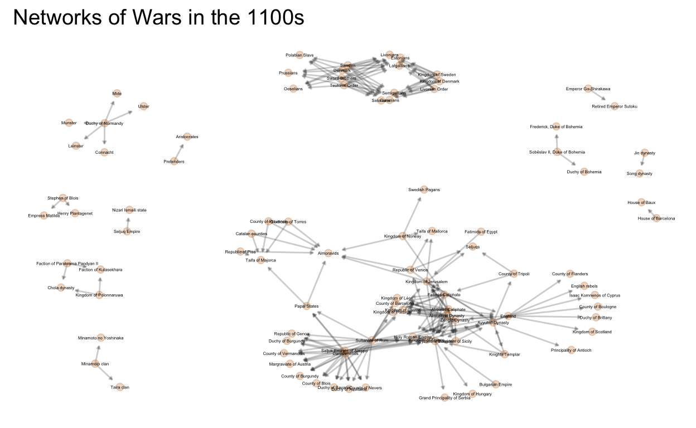
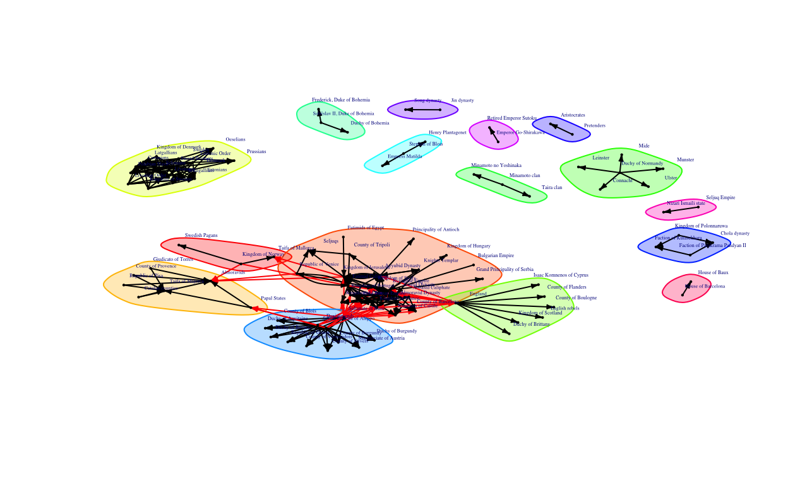
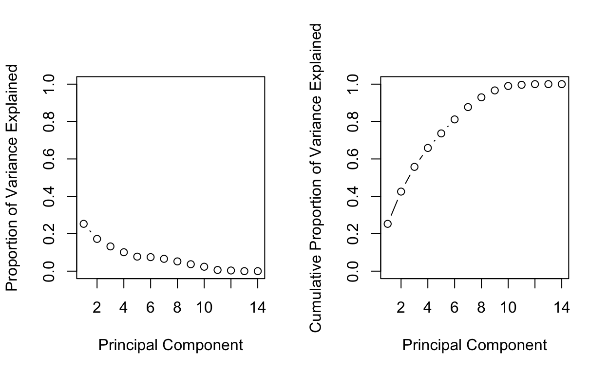
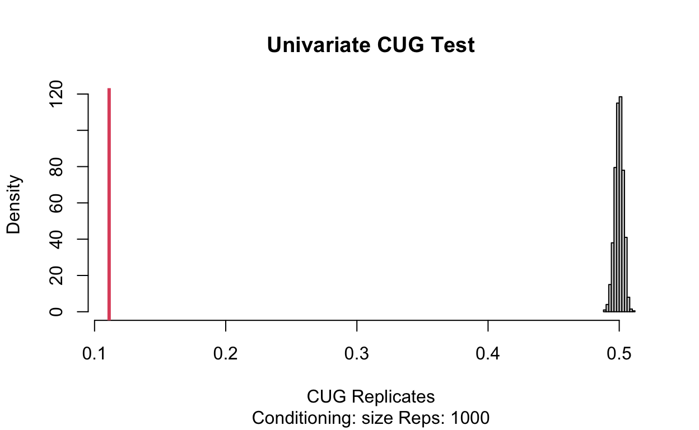
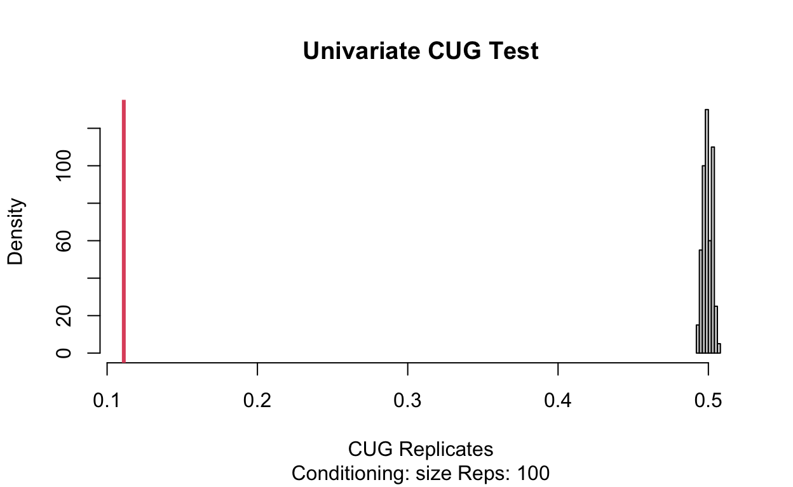
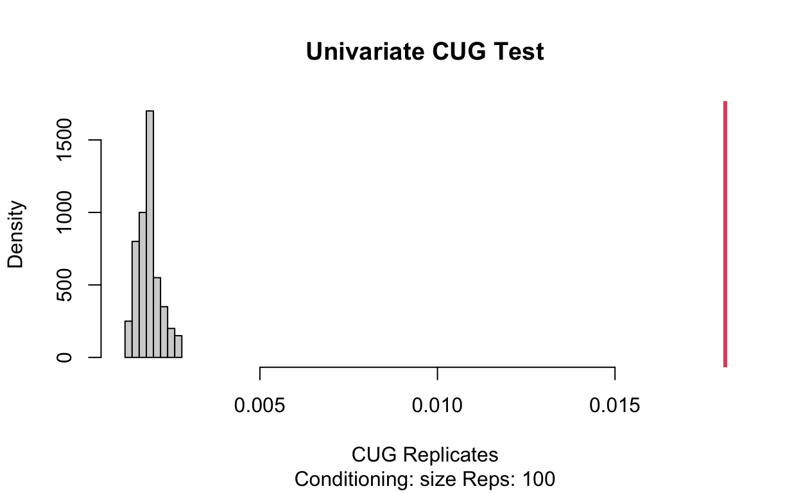
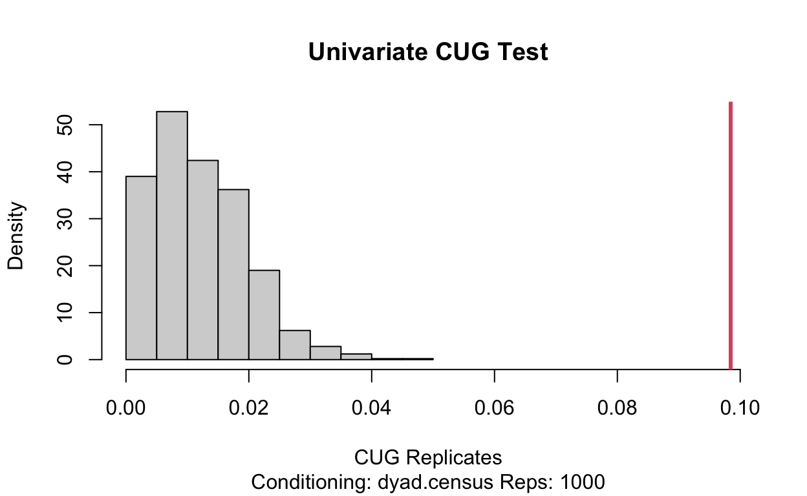
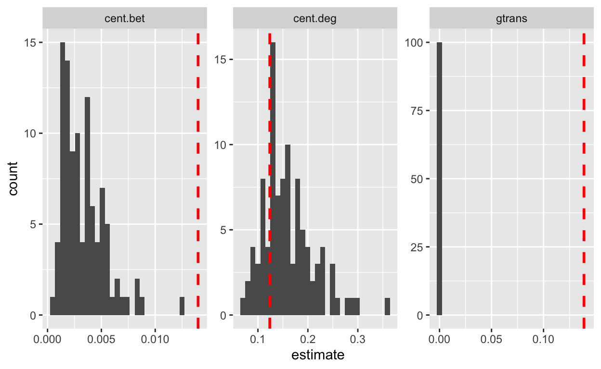

Loading the Networks
Putting Network into Necessary Formats
Adding Attributes
Brokerage scores in the 1000s
Brokerage scores in the 1100s
Brokerage scores in the 1200s
Inital Graphical Representation
1000s GGplot
#summary(wars_in_1100s_network)
1100s GGplot

1200s GGplot
wars_in_1000s_edgelist <- as.matrix(wars_in_1000s)
wars_in_1000s_edgelist_network_edgelist <- graph.edgelist(wars_in_1000s_edgelist, directed=TRUE)
wars_in_1000s.ig<-graph_from_data_frame(wars_in_1000s)
wars_in_1000s_network <- asNetwork(wars_in_1000s.ig)
aspects_of_1000s_states <- read_excel("~/Desktop/Spring 2022/Networks/aspects_of_1000s_states.xlsx")
total_1000s <- merge(aspects_of_1000s_states, wars_in_1000s.nodes.stat_2, by="name")
aspects_of_1100s_states <- read_excel("~/Desktop/Spring 2022/Networks/aspects_of_1100s_states.xlsx")
total_1100s <- merge(aspects_of_1100s_states, wars_in_1100s.nodes.stat_2, by="name")
aspects_of_1200s_states <- read_excel("~/Desktop/Spring 2022/Networks/aspects_of_1200s_states.xlsx")
total_1200s <- merge(aspects_of_1200s_states, wars_in_1200s.nodes.stat_2, by="name")
total_1000s_brokerag_reg <- scale(total_1000s[,2:25])
total_1000s_brokerag_reg <- as.data.frame(total_1000s_brokerag_reg)
total_1000s_brokerag_reg$name <- total_1000s$name
total_1000s_brokerag_reg$win_rate <- (total_1000s_brokerag_reg$outdegree/total_1000s_brokerag_reg$totdegree)
total_1000s_brokerag_reg$loss_rate <- (total_1000s_brokerag_reg$indegree/total_1000s_brokerag_reg$totdegree)
total_1000s_brokerag_reg_binom <- total_1000s_brokerag_reg %>% mutate(more_win_or_loss = case_when(
win_rate < 0.5 ~ 0,
win_rate >= 0.5 ~ 1))
First_1000s_regression <- glm(more_win_or_loss~.-name-totdegree-indegree-outdegree-dc-eigen.dc-win_rate-loss_rate, total_1000s_brokerag_reg_binom, family=binomial)
First_1000s_regression
Call: glm(formula = more_win_or_loss ~ . - name - totdegree - indegree -
outdegree - dc - eigen.dc - win_rate - loss_rate, family = binomial,
data = total_1000s_brokerag_reg_binom)
Coefficients:
(Intercept) Catholic Islam Orthodox Buddhist
6.1272 1.4356 1.0035 1.9618 0.8589
Pagan Tengrism Shinto Hindu Shamanism
3.5228 2.8722 0.3449 4.4574 1.9021
eigen close rc eigen.rc broker.tot
-2.1536 1.5665 1.3695 12.5519 30.9756
broker.coord broker.itin broker.rep broker.gate broker.lia
-0.4219 -1.6517 -1.2439 -1.8494 -21.6928
Degrees of Freedom: 101 Total (i.e. Null); 82 Residual
(8 observations deleted due to missingness)
Null Deviance: 137.5
Residual Deviance: 85.48 AIC: 125.5set.seed(292)
total_1000s_for_regression <- scale(total_1000s[,-c(1, 20:25)])
total_1000s_for_regression <- as.data.frame(total_1000s_for_regression)
total_1000s_for_regression$win_rate <- (total_1000s_for_regression$outdegree/total_1000s_for_regression$totdegree)
total_1000s_for_regression$loss_rate <- (total_1000s_for_regression$indegree/total_1000s_for_regression$totdegree)
total_1000s_for_regression <- total_1000s_for_regression %>% mutate(more_win_or_loss = case_when(
win_rate < 0.5 ~ 0,
win_rate >= 0.5 ~ 1))
First_1000s_regression <- glm(more_win_or_loss~.-loss_rate-win_rate-totdegree-indegree-outdegree-dc-eigen.dc, total_1000s_for_regression, family=binomial)
First_1000s_regression
Call: glm(formula = more_win_or_loss ~ . - loss_rate - win_rate - totdegree -
indegree - outdegree - dc - eigen.dc, family = binomial,
data = total_1000s_for_regression)
Coefficients:
(Intercept) Catholic Islam Orthodox Buddhist
2.6597 1.2541 0.7489 1.8791 0.7895
Pagan Tengrism Shinto Hindu Shamanism
3.5081 2.8316 0.2949 4.3849 1.8906
eigen close rc eigen.rc
-1.7084 1.3624 1.2501 1.9155
Degrees of Freedom: 109 Total (i.e. Null); 96 Residual
Null Deviance: 147.2
Residual Deviance: 99.03 AIC: 127set.seed(6738)
in_training<- sample(1:nrow(total_1000s_for_regression), nrow(total_1000s_for_regression) * 0.7 )
training_1000s <- total_1000s_for_regression[in_training,]
test_1000s <- total_1000s_for_regression[-in_training,]
lm_1000s_binom_subset_1 <- glm(more_win_or_loss~.-loss_rate-win_rate-totdegree-indegree-outdegree-dc-eigen.dc, total_1000s_for_regression, family=binomial, subset = in_training )
logsitic_1_1000s_prob <- predict(lm_1000s_binom_subset_1, test_1000s,
type = "response")
log_preds_1<-ifelse(logsitic_1_1000s_prob >= 0.5, 1, 0)
prediction_1_logs <-mean(log_preds_1 == test_1000s$more_win_or_loss)
prediction_1_logs %>% kable()
| x |
|---|
| 0.7272727 |
set.seed(246)
x_ridge <- model.matrix(more_win_or_loss ~ .-loss_rate-win_rate-totdegree-indegree-outdegree-dc-eigen.dc, total_1000s_for_regression)[, -1]
y_ridge <- total_1000s_for_regression$more_win_or_loss
grid <- 10^seq(10, -2, length = 100)
ridge.mod <- glmnet(x_ridge, y_ridge, alpha = 0, lambda = grid)
dim(coef(ridge.mod))
[1] 14 100set.seed(9292)
ridge.mod <- glmnet(x_ridge[train_ridge, ], y_ridge[train_ridge],
alpha = 0, lambda = grid, thresh = 1e-12)
ridge.pred <- predict(ridge.mod, s = 4, newx = x_ridge[test_ridge,])
mean((ridge.pred - y.test_ridge)^2) %>% kable()
| x |
|---|
| 0.238849 |
set.seed(231)
ridge.pred <- predict(ridge.mod, s = 0, newx = x_ridge[test_ridge, ],
exact = T, x = x_ridge[train_ridge, ], y = y_ridge[train_ridge])
predict(ridge.mod, s = 0, exact = T, type = "coefficients",
x = x_ridge[train_ridge, ], y = y_ridge[train_ridge])[1:14, ]
(Intercept) Catholic Islam Orthodox Buddhist
0.62262544 0.17425166 0.10710186 0.26674490 0.14127907
Pagan Tengrism Shinto Hindu Shamanism
0.09958513 0.11676503 0.05824048 0.16555932 0.06608253
eigen close rc eigen.rc
-0.19106753 0.19026955 0.17419215 0.07078561 set.seed(9292)
bestlam <- cv.out$lambda.min
bestlam
[1] 0.1930504set.seed(9292)
ridge.pred <- predict(cv.out, s = bestlam, newx = x_ridge[test_ridge,])
mean((ridge.pred - y.test_ridge)^2) %>% kable()
| x |
|---|
| 0.1733588 |
set.seed(2897)
x_lasso <- model.matrix(more_win_or_loss ~ .-loss_rate-win_rate-totdegree-indegree-outdegree-dc-eigen.dc, total_1000s_for_regression)[, -1]
y_lasso <- total_1000s_for_regression$more_win_or_loss
grid <- 10^seq(10, -2, length = 100)
lasso.mod <- glmnet(x_lasso, y_lasso, alpha = 0, lambda = grid)
dim(coef(lasso.mod))
[1] 14 100set.seed(1920)
bestlam_2 <- cv.out_2$lambda.min
lasso.pred <- predict(cv.out_2, s = bestlam_2, newx = x_ridge[test_ridge,])
mean((lasso.pred - y.test_ridge)^2) %>% kable()
| x |
|---|
| 0.1946013 |
set.seed(2739)
out <- glmnet(x_lasso[train_lasso, ], y_lasso[train_lasso],
alpha = 1, lambda = grid)
lasso.coef <- predict(out, type = "coefficients", s = bestlam_2)[1:14, ]
lasso.coef
(Intercept) Catholic Islam Orthodox Buddhist
0.61939985 -0.01942777 -0.04501563 0.05244203 0.00000000
Pagan Tengrism Shinto Hindu Shamanism
0.01462560 0.01837641 0.00000000 0.01737283 0.00000000
eigen close rc eigen.rc
0.00000000 0.00000000 0.12599252 0.00000000 Community Grouping
Label Propagation 1000s:
The first community cluster below is done using label propagation. This results in 39 groups
set.seed(23)
comm.lab<-label.propagation.community(wars_in_1000s.ig)
#Inspect clustering object
# igraph::groups(comm.lab)

Walktrap 1000s:
Walktrap classification as seen below results in 19 distinct communities.
set.seed(238)
#Run clustering algorithm: fast_greedy
wars_in_1000s.wt<-walktrap.community(wars_in_1000s.ig)
#igraph::groups(wars_in_1000s.wt)
Adding more steps resulted in 19 groups for both 10 and 20 steps.
#Run & inspect clustering algorithm: 10 steps
#igraph::groups(walktrap.community(wars_in_1000s.ig, steps=10))
#Run & inspect clustering algorithm: 20 steps
#igraph::groups(walktrap.community(wars_in_1000s.ig ,steps=20))
#Run & inspect clustering algorithm
Machine Learning, Regression and Principle Components:
Principal Components 1000s
total_1000s_for_PCA <- total_1000s_brokerag_reg_binom[-c(20:27)]
apply(total_1000s_for_PCA[-1], 2, mean)
Islam Orthodox Buddhist Pagan
-4.543990e-17 2.070087e-17 5.551115e-17 8.026053e-18
Tengrism Shinto Hindu Shamanism
4.023376e-18 0.000000e+00 -1.764317e-17 6.598356e-18
totdegree indegree outdegree eigen
5.849172e-17 -6.382747e-18 -9.967761e-18 -3.483123e-17
close rc eigen.rc dc
-1.804408e-17 4.784670e-17 1.054879e-18 1.351414e-16
eigen.dc broker.tot more_win_or_loss
-1.968172e-17 1.007791e-17 6.090909e-01 apply(total_1000s_for_PCA[-1], 2, var)
Islam Orthodox Buddhist Pagan
1.0000000 1.0000000 1.0000000 1.0000000
Tengrism Shinto Hindu Shamanism
1.0000000 1.0000000 1.0000000 1.0000000
totdegree indegree outdegree eigen
1.0000000 1.0000000 1.0000000 1.0000000
close rc eigen.rc dc
1.0000000 1.0000000 1.0000000 1.0000000
eigen.dc broker.tot more_win_or_loss
1.0000000 1.0000000 0.2402836 pr.out <- prcomp(total_1000s_for_PCA[-1], scale = TRUE)
names(pr.out)
[1] "sdev" "rotation" "center" "scale" "x" pr.out$center
Islam Orthodox Buddhist Pagan
-4.541821e-17 2.069052e-17 5.551115e-17 8.074349e-18
Tengrism Shinto Hindu Shamanism
4.037175e-18 0.000000e+00 -1.766264e-17 6.560409e-18
totdegree indegree outdegree eigen
5.853903e-17 -6.308085e-18 -9.840613e-18 -3.482063e-17
close rc eigen.rc dc
-1.810421e-17 4.782317e-17 1.009294e-18 1.351428e-16
eigen.dc broker.tot more_win_or_loss
-1.968123e-17 1.009294e-17 6.090909e-01 pr.out$scale
Islam Orthodox Buddhist Pagan
1.0000000 1.0000000 1.0000000 1.0000000
Tengrism Shinto Hindu Shamanism
1.0000000 1.0000000 1.0000000 1.0000000
totdegree indegree outdegree eigen
1.0000000 1.0000000 1.0000000 1.0000000
close rc eigen.rc dc
1.0000000 1.0000000 1.0000000 1.0000000
eigen.dc broker.tot more_win_or_loss
1.0000000 1.0000000 0.4901873 biplot(pr.out, scale = 0)
set.seed(172)
ggbiplot(pr.out, labels = total_1000s$name, labels.size =1.5) +
labs(title="Principal Components 1000s")+ theme_minimal()
pr.out$rotation = -pr.out$rotation
pr.out$x = -pr.out$x
biplot(pr.out, scale = 0)
pr.out$sdev
[1] 2.302910e+00 1.584479e+00 1.340323e+00 1.075565e+00 1.069769e+00
[6] 1.030516e+00 1.016871e+00 1.010250e+00 9.918398e-01 9.523231e-01
[11] 8.177492e-01 7.220271e-01 6.572256e-01 5.051892e-01 3.819642e-01
[16] 2.407648e-01 7.909304e-16 5.681418e-16 1.936857e-16pr.var <- pr.out$sdev^2
pr.var
[1] 5.303392e+00 2.510573e+00 1.796467e+00 1.156841e+00 1.144405e+00
[6] 1.061964e+00 1.034026e+00 1.020604e+00 9.837462e-01 9.069192e-01
[11] 6.687138e-01 5.213231e-01 4.319455e-01 2.552161e-01 1.458967e-01
[16] 5.796769e-02 6.255709e-31 3.227851e-31 3.751413e-32pve <- pr.var / sum(pr.var)
pve
[1] 2.791259e-01 1.321354e-01 9.455088e-02 6.088635e-02 6.023184e-02
[6] 5.589284e-02 5.442242e-02 5.371600e-02 5.177612e-02 4.773259e-02
[11] 3.519546e-02 2.743806e-02 2.273397e-02 1.343243e-02 7.678773e-03
[16] 3.050931e-03 3.292478e-32 1.698869e-32 1.974428e-33Label Propagation 1100s:
The first community cluster below is done using label propagation. This results in 39 groups
set.seed(23)
comm.lab<-label.propagation.community(wars_in_1100s.ig)
#Inspect clustering object
# igraph::groups(comm.lab)
Walktrap 1000s:
Walktrap classification as seen below results in 19 distinct communities.
set.seed(238)
#Run clustering algorithm: fast_greedy
wars_in_1100s.wt<-walktrap.community(wars_in_1100s.ig)
#igraph::groups(wars_in_1000s.wt)
Adding more steps resulted in 19 groups for both 10 and 20 steps.
#Run & inspect clustering algorithm: 10 steps
#igraph::groups(walktrap.community(wars_in_1000s.ig, steps=10))
#Run & inspect clustering algorithm: 20 steps
#igraph::groups(walktrap.community(wars_in_1000s.ig ,steps=20))
#Run & inspect clustering algorithm

Principal Components 1200s
total_1100s_brokerag_reg<-scale(total_1100s[,2:24])
total_1100s_brokerag_reg <- as.data.frame(total_1100s_brokerag_reg[,c(-8)])
total_1100s_brokerag_reg$win_rate <- (total_1100s_brokerag_reg$outdegree/total_1100s_brokerag_reg$totdegree)
total_1100s_brokerag_reg$loss_rate <- (total_1100s_brokerag_reg$indegree/total_1100s_brokerag_reg$totdegree)
total_1100s_brokerag_reg_binom <- total_1100s_brokerag_reg %>%
mutate(more_win_or_loss = case_when(
win_rate < 0.5 ~ 0,
win_rate >= 0.5 ~ 1))
total_1100s_brokerag_reg_binom
Catholic Islam Orthodox Buddhist Pagan Tengrism
1 -1.1664160 2.2972142 -0.2085506 -0.2085506 -0.3411871 NaN
2 -1.1664160 2.2972142 -0.2085506 -0.2085506 -0.3411871 NaN
3 -1.1664160 2.2972142 -0.2085506 -0.2085506 -0.3411871 NaN
4 0.8483026 -0.4307277 -0.2085506 -0.2085506 -0.3411871 NaN
5 -1.1664160 2.2972142 -0.2085506 -0.2085506 -0.3411871 NaN
6 -1.1664160 -0.4307277 4.7445259 -0.2085506 -0.3411871 NaN
7 -1.1664160 -0.4307277 4.7445259 -0.2085506 -0.3411871 NaN
8 0.8483026 -0.4307277 -0.2085506 -0.2085506 -0.3411871 NaN
9 -1.1664160 -0.4307277 -0.2085506 -0.2085506 -0.3411871 NaN
10 0.8483026 -0.4307277 -0.2085506 -0.2085506 -0.3411871 NaN
11 0.8483026 -0.4307277 -0.2085506 -0.2085506 -0.3411871 NaN
12 0.8483026 -0.4307277 -0.2085506 -0.2085506 -0.3411871 NaN
13 0.8483026 -0.4307277 -0.2085506 -0.2085506 -0.3411871 NaN
14 0.8483026 -0.4307277 -0.2085506 -0.2085506 -0.3411871 NaN
15 0.8483026 -0.4307277 -0.2085506 -0.2085506 -0.3411871 NaN
16 0.8483026 -0.4307277 -0.2085506 -0.2085506 -0.3411871 NaN
17 0.8483026 -0.4307277 -0.2085506 -0.2085506 -0.3411871 NaN
18 0.8483026 -0.4307277 -0.2085506 -0.2085506 -0.3411871 NaN
19 0.8483026 -0.4307277 -0.2085506 -0.2085506 -0.3411871 NaN
20 -1.1664160 -0.4307277 -0.2085506 -0.2085506 2.9000907 NaN
21 -1.1664160 2.2972142 -0.2085506 -0.2085506 -0.3411871 NaN
22 0.8483026 -0.4307277 -0.2085506 -0.2085506 -0.3411871 NaN
23 0.8483026 -0.4307277 -0.2085506 -0.2085506 -0.3411871 NaN
24 0.8483026 -0.4307277 -0.2085506 -0.2085506 -0.3411871 NaN
25 0.8483026 -0.4307277 -0.2085506 -0.2085506 -0.3411871 NaN
26 0.8483026 -0.4307277 -0.2085506 -0.2085506 -0.3411871 NaN
27 0.8483026 -0.4307277 -0.2085506 -0.2085506 -0.3411871 NaN
28 0.8483026 -0.4307277 -0.2085506 -0.2085506 -0.3411871 NaN
29 -1.1664160 -0.4307277 -0.2085506 4.7445259 -0.3411871 NaN
30 0.8483026 -0.4307277 -0.2085506 -0.2085506 -0.3411871 NaN
31 0.8483026 -0.4307277 -0.2085506 -0.2085506 -0.3411871 NaN
32 0.8483026 -0.4307277 -0.2085506 -0.2085506 -0.3411871 NaN
33 -1.1664160 -0.4307277 -0.2085506 -0.2085506 2.9000907 NaN
34 -1.1664160 -0.4307277 -0.2085506 -0.2085506 -0.3411871 NaN
35 -1.1664160 -0.4307277 -0.2085506 -0.2085506 -0.3411871 NaN
36 -1.1664160 2.2972142 -0.2085506 -0.2085506 -0.3411871 NaN
37 -1.1664160 2.2972142 -0.2085506 -0.2085506 -0.3411871 NaN
38 0.8483026 -0.4307277 -0.2085506 -0.2085506 -0.3411871 NaN
39 0.8483026 -0.4307277 -0.2085506 -0.2085506 -0.3411871 NaN
40 -1.1664160 -0.4307277 4.7445259 -0.2085506 -0.3411871 NaN
41 0.8483026 -0.4307277 -0.2085506 -0.2085506 -0.3411871 NaN
42 0.8483026 -0.4307277 -0.2085506 -0.2085506 -0.3411871 NaN
43 0.8483026 -0.4307277 -0.2085506 -0.2085506 -0.3411871 NaN
44 0.8483026 -0.4307277 -0.2085506 -0.2085506 -0.3411871 NaN
45 -1.1664160 -0.4307277 4.7445259 -0.2085506 -0.3411871 NaN
46 -1.1664160 -0.4307277 -0.2085506 4.7445259 -0.3411871 NaN
47 0.8483026 -0.4307277 -0.2085506 -0.2085506 -0.3411871 NaN
48 0.8483026 -0.4307277 -0.2085506 -0.2085506 -0.3411871 NaN
49 0.8483026 -0.4307277 -0.2085506 -0.2085506 -0.3411871 NaN
50 0.8483026 -0.4307277 -0.2085506 -0.2085506 -0.3411871 NaN
51 0.8483026 -0.4307277 -0.2085506 -0.2085506 -0.3411871 NaN
52 0.8483026 -0.4307277 -0.2085506 -0.2085506 -0.3411871 NaN
53 -1.1664160 -0.4307277 -0.2085506 4.7445259 -0.3411871 NaN
54 0.8483026 -0.4307277 -0.2085506 -0.2085506 -0.3411871 NaN
55 0.8483026 -0.4307277 -0.2085506 -0.2085506 -0.3411871 NaN
56 0.8483026 -0.4307277 -0.2085506 -0.2085506 -0.3411871 NaN
57 0.8483026 -0.4307277 -0.2085506 -0.2085506 -0.3411871 NaN
58 -1.1664160 -0.4307277 -0.2085506 -0.2085506 2.9000907 NaN
59 0.8483026 -0.4307277 -0.2085506 -0.2085506 -0.3411871 NaN
60 0.8483026 -0.4307277 -0.2085506 -0.2085506 -0.3411871 NaN
61 -1.1664160 -0.4307277 -0.2085506 -0.2085506 2.9000907 NaN
62 0.8483026 -0.4307277 -0.2085506 -0.2085506 -0.3411871 NaN
63 0.8483026 -0.4307277 -0.2085506 -0.2085506 -0.3411871 NaN
64 -1.1664160 -0.4307277 -0.2085506 -0.2085506 -0.3411871 NaN
65 -1.1664160 -0.4307277 -0.2085506 -0.2085506 -0.3411871 NaN
66 0.8483026 -0.4307277 -0.2085506 -0.2085506 -0.3411871 NaN
67 -1.1664160 2.2972142 -0.2085506 -0.2085506 -0.3411871 NaN
68 -1.1664160 -0.4307277 -0.2085506 -0.2085506 2.9000907 NaN
69 0.8483026 -0.4307277 -0.2085506 -0.2085506 -0.3411871 NaN
70 -1.1664160 -0.4307277 -0.2085506 -0.2085506 2.9000907 NaN
71 0.8483026 -0.4307277 -0.2085506 -0.2085506 -0.3411871 NaN
72 0.8483026 -0.4307277 -0.2085506 -0.2085506 -0.3411871 NaN
73 -1.1664160 -0.4307277 -0.2085506 -0.2085506 2.9000907 NaN
74 0.8483026 -0.4307277 -0.2085506 -0.2085506 -0.3411871 NaN
75 0.8483026 -0.4307277 -0.2085506 -0.2085506 -0.3411871 NaN
76 0.8483026 -0.4307277 -0.2085506 -0.2085506 -0.3411871 NaN
77 -1.1664160 -0.4307277 -0.2085506 -0.2085506 -0.3411871 NaN
78 -1.1664160 2.2972142 -0.2085506 -0.2085506 -0.3411871 NaN
79 -1.1664160 2.2972142 -0.2085506 -0.2085506 -0.3411871 NaN
80 -1.1664160 2.2972142 -0.2085506 -0.2085506 -0.3411871 NaN
81 -1.1664160 -0.4307277 -0.2085506 -0.2085506 2.9000907 NaN
82 -1.1664160 -0.4307277 -0.2085506 -0.2085506 2.9000907 NaN
83 0.8483026 -0.4307277 -0.2085506 -0.2085506 -0.3411871 NaN
84 -1.1664160 -0.4307277 -0.2085506 4.7445259 -0.3411871 NaN
85 0.8483026 -0.4307277 -0.2085506 -0.2085506 -0.3411871 NaN
86 -1.1664160 2.2972142 -0.2085506 -0.2085506 -0.3411871 NaN
87 0.8483026 -0.4307277 -0.2085506 -0.2085506 -0.3411871 NaN
88 -1.1664160 -0.4307277 -0.2085506 -0.2085506 2.9000907 NaN
89 0.8483026 -0.4307277 -0.2085506 -0.2085506 -0.3411871 NaN
90 -1.1664160 2.2972142 -0.2085506 -0.2085506 -0.3411871 NaN
91 -1.1664160 2.2972142 -0.2085506 -0.2085506 -0.3411871 NaN
92 -1.1664160 -0.4307277 -0.2085506 -0.2085506 -0.3411871 NaN
93 0.8483026 -0.4307277 -0.2085506 -0.2085506 -0.3411871 NaN
94 0.8483026 -0.4307277 -0.2085506 -0.2085506 -0.3411871 NaN
95 -1.1664160 2.2972142 -0.2085506 -0.2085506 -0.3411871 NaN
Shinto Shamanism totdegree indegree outdegree
1 -0.2085506 NaN 0.98653288 -0.8115672 1.78663316
2 -0.2085506 NaN 0.98653288 -0.8115672 1.78663316
3 -0.2085506 NaN 0.60085130 1.7799920 -0.55770593
4 -0.2085506 NaN -0.74903423 -0.4876223 -0.55770593
5 -0.2085506 NaN 2.52925920 2.4278818 1.31776534
6 -0.2085506 NaN -0.74903423 -0.8115672 -0.32327202
7 -0.2085506 NaN 2.52925920 4.0476064 0.14559580
8 -0.2085506 NaN -0.55619344 -0.8115672 -0.08883811
9 -0.2085506 NaN -0.55619344 -0.1636774 -0.55770593
10 -0.2085506 NaN -0.74903423 -0.4876223 -0.55770593
11 -0.2085506 NaN 0.02232893 0.8081573 -0.55770593
12 -0.2085506 NaN -0.36335265 0.1602675 -0.55770593
13 -0.2085506 NaN -0.74903423 -0.4876223 -0.55770593
14 -0.2085506 NaN -0.36335265 0.1602675 -0.55770593
15 -0.2085506 NaN -0.74903423 -0.4876223 -0.55770593
16 -0.2085506 NaN -0.36335265 0.1602675 -0.55770593
17 -0.2085506 NaN -0.55619344 -0.8115672 -0.08883811
18 -0.2085506 NaN -0.36335265 -0.4876223 -0.08883811
19 -0.2085506 NaN -0.36335265 0.1602675 -0.55770593
20 -0.2085506 NaN 0.60085130 1.7799920 -0.55770593
21 -0.2085506 NaN 1.56505525 -0.8115672 2.48993488
22 -0.2085506 NaN 0.79369209 -0.8115672 1.55219925
23 -0.2085506 NaN -0.36335265 0.1602675 -0.55770593
24 -0.2085506 NaN -0.36335265 0.1602675 -0.55770593
25 -0.2085506 NaN -0.74903423 -0.4876223 -0.55770593
26 -0.2085506 NaN -0.74903423 -0.4876223 -0.55770593
27 -0.2085506 NaN -0.36335265 0.1602675 -0.55770593
28 -0.2085506 NaN 0.02232893 -0.8115672 0.61446361
29 -0.2085506 NaN -0.74903423 -0.8115672 -0.32327202
30 -0.2085506 NaN -0.74903423 -0.4876223 -0.55770593
31 -0.2085506 NaN 1.95073683 0.8081573 1.78663316
32 -0.2085506 NaN -0.74903423 -0.4876223 -0.55770593
33 -0.2085506 NaN 0.60085130 1.7799920 -0.55770593
34 -0.2085506 NaN -0.55619344 -0.1636774 -0.55770593
35 -0.2085506 NaN -0.55619344 -0.8115672 -0.08883811
36 -0.2085506 NaN 2.33641841 1.4560471 1.78663316
37 -0.2085506 NaN -0.74903423 -0.8115672 -0.32327202
38 -0.2085506 NaN -0.74903423 -0.4876223 -0.55770593
39 -0.2085506 NaN -0.55619344 -0.8115672 -0.08883811
40 -0.2085506 NaN -0.74903423 -0.4876223 -0.55770593
41 -0.2085506 NaN -0.74903423 -0.4876223 -0.55770593
42 -0.2085506 NaN 1.37221446 1.7799920 0.38002970
43 -0.2085506 NaN -0.74903423 -0.8115672 -0.32327202
44 -0.2085506 NaN -0.74903423 -0.4876223 -0.55770593
45 -0.2085506 NaN -0.74903423 -0.4876223 -0.55770593
46 -0.2085506 NaN -0.74903423 -0.8115672 -0.32327202
47 -0.2085506 NaN 0.02232893 0.8081573 -0.55770593
48 -0.2085506 NaN 1.37221446 2.1039369 0.14559580
49 -0.2085506 NaN -0.74903423 -0.4876223 -0.55770593
50 -0.2085506 NaN 3.49346315 2.7518267 2.25550097
51 -0.2085506 NaN 0.02232893 0.8081573 -0.55770593
52 -0.2085506 NaN -0.17051186 -0.8115672 0.38002970
53 -0.2085506 NaN -0.55619344 -0.8115672 -0.08883811
54 -0.2085506 NaN 0.02232893 0.8081573 -0.55770593
55 -0.2085506 NaN -0.74903423 -0.4876223 -0.55770593
56 -0.2085506 NaN 0.60085130 0.8081573 0.14559580
57 -0.2085506 NaN -0.17051186 -0.4876223 0.14559580
58 -0.2085506 NaN 0.60085130 1.7799920 -0.55770593
59 -0.2085506 NaN -0.74903423 -0.4876223 -0.55770593
60 -0.2085506 NaN 0.21516972 -0.8115672 0.84889752
61 -0.2085506 NaN 0.60085130 1.7799920 -0.55770593
62 -0.2085506 NaN -0.36335265 0.1602675 -0.55770593
63 -0.2085506 NaN -0.74903423 -0.4876223 -0.55770593
64 4.7445259 NaN -0.55619344 -0.8115672 -0.08883811
65 4.7445259 NaN -0.74903423 -0.4876223 -0.55770593
66 -0.2085506 NaN -0.74903423 -0.4876223 -0.55770593
67 -0.2085506 NaN -0.74903423 -0.4876223 -0.55770593
68 -0.2085506 NaN -0.17051186 0.4842124 -0.55770593
69 -0.2085506 NaN 0.02232893 0.1602675 -0.08883811
70 -0.2085506 NaN -0.17051186 0.4842124 -0.55770593
71 -0.2085506 NaN -0.74903423 -0.8115672 -0.32327202
72 -0.2085506 NaN -0.74903423 -0.4876223 -0.55770593
73 -0.2085506 NaN -0.17051186 0.4842124 -0.55770593
74 -0.2085506 NaN -0.36335265 0.1602675 -0.55770593
75 -0.2085506 NaN -0.55619344 -0.8115672 -0.08883811
76 -0.2085506 NaN 0.21516972 -0.4876223 0.61446361
77 4.7445259 NaN -0.74903423 -0.4876223 -0.55770593
78 -0.2085506 NaN 1.56505525 -0.8115672 2.48993488
79 -0.2085506 NaN -0.74903423 -0.8115672 -0.32327202
80 -0.2085506 NaN -0.36335265 0.1602675 -0.55770593
81 -0.2085506 NaN 0.60085130 1.7799920 -0.55770593
82 -0.2085506 NaN 0.60085130 1.7799920 -0.55770593
83 -0.2085506 NaN -0.55619344 -0.8115672 -0.08883811
84 -0.2085506 NaN -0.74903423 -0.4876223 -0.55770593
85 -0.2085506 NaN -0.55619344 -0.8115672 -0.08883811
86 -0.2085506 NaN 3.49346315 -0.8115672 4.83427397
87 -0.2085506 NaN 0.79369209 -0.8115672 1.55219925
88 -0.2085506 NaN -0.74903423 -0.4876223 -0.55770593
89 -0.2085506 NaN 1.95073683 -0.8115672 2.95880270
90 -0.2085506 NaN 0.02232893 0.8081573 -0.55770593
91 -0.2085506 NaN -0.36335265 0.1602675 -0.55770593
92 4.7445259 NaN -0.74903423 -0.4876223 -0.55770593
93 -0.2085506 NaN 0.79369209 -0.8115672 1.55219925
94 -0.2085506 NaN -0.74903423 -0.4876223 -0.55770593
95 -0.2085506 NaN 2.14357762 1.1321022 1.78663316
eigen rc eigen.rc dc eigen.dc
1 1.90742914 -0.72419992 -0.22724308 0.72419992 2.47307792
2 1.90742914 -0.72419992 -0.22724308 0.72419992 2.47307792
3 -0.37522636 0.33072090 -0.22724308 -0.33072090 -0.39873052
4 -0.37522636 3.36361826 -0.22724308 -3.36361826 -0.39873052
5 5.00123450 0.58390190 6.47934055 -0.58390190 4.20087406
6 -0.34813305 -0.72419992 -0.22724308 0.72419992 -0.36464443
7 -0.22558046 -0.25465323 -0.16023813 0.25465323 -0.23208659
8 -0.37522636 -0.72419992 -0.22724308 0.72419992 -0.39873052
9 -0.37522636 1.31970917 -0.22724308 -1.31970917 -0.39873052
10 -0.37522636 0.09336372 -0.22724308 -0.09336372 -0.39873052
11 -0.37522636 -0.39976990 -0.22724308 0.39976990 -0.39873052
12 -0.37522636 -0.47392533 -0.22724308 0.47392533 -0.39873052
13 -0.37522636 -0.31541810 -0.22724308 0.31541810 -0.39873052
14 -0.37522636 -0.47392533 -0.22724308 0.47392533 -0.39873052
15 -0.37522636 -0.31541810 -0.22724308 0.31541810 -0.39873052
16 -0.37522636 -0.47392533 -0.22724308 0.47392533 -0.39873052
17 -0.37522636 -0.72419992 -0.22724308 0.72419992 -0.39873052
18 0.03804718 -0.21322264 -0.02586951 0.21322264 0.05621642
19 -0.37522636 -0.47392533 -0.22724308 0.47392533 -0.39873052
20 -0.37522636 -0.17915749 -0.22724308 0.17915749 -0.39873052
21 0.34002682 -0.72419992 -0.22724308 0.72419992 0.50112937
22 -0.37522636 -0.72419992 -0.22724308 0.72419992 -0.39873052
23 -0.37522636 -0.47392533 -0.22724308 0.47392533 -0.39873052
24 -0.37522636 -0.47392533 -0.22724308 0.47392533 -0.39873052
25 -0.37522636 1.31970917 -0.22724308 -1.31970917 -0.39873052
26 -0.37522636 -0.31541810 -0.22724308 0.31541810 -0.39873052
27 -0.37522636 -0.47392533 -0.22724308 0.47392533 -0.39873052
28 -0.37522636 -0.72419992 -0.22724308 0.72419992 -0.39873052
29 -0.37522636 -0.72419992 -0.22724308 0.72419992 -0.39873052
30 -0.37522636 1.31970917 -0.22724308 -1.31970917 -0.39873052
31 1.29450849 -0.39976990 0.28933008 0.39976990 1.53524090
32 -0.37522636 -0.31541810 -0.22724308 0.31541810 -0.39873052
33 -0.37522636 -0.17915749 -0.22724308 0.17915749 -0.39873052
34 -0.37522636 1.31970917 -0.22724308 -1.31970917 -0.39873052
35 -0.37522636 -0.72419992 -0.22724308 0.72419992 -0.39873052
36 1.90742914 0.45497840 2.33950452 -0.45497840 1.64467164
37 0.63390869 -0.72419992 -0.22724308 0.72419992 0.87086209
38 -0.37522636 1.31970917 -0.22724308 -1.31970917 -0.39873052
39 -0.37522636 -0.72419992 -0.22724308 0.72419992 -0.39873052
40 -0.37522636 0.63840614 -0.22724308 -0.63840614 -0.39873052
41 -0.37522636 1.31970917 -0.22724308 -1.31970917 -0.39873052
42 2.01195113 -0.35921615 0.60360489 0.35921615 2.33642456
43 -0.37522636 -0.72419992 -0.22724308 0.72419992 -0.39873052
44 -0.37522636 3.36361826 -0.22724308 -3.36361826 -0.39873052
45 -0.37522636 -0.31541810 -0.22724308 0.31541810 -0.39873052
46 -0.37522636 -0.72419992 -0.22724308 0.72419992 -0.39873052
47 -0.37522636 -0.39976990 -0.22724308 0.39976990 -0.39873052
48 1.03854581 -0.35562615 0.26965481 0.35562615 1.21956440
49 -0.37522636 0.63840614 -0.22724308 -0.63840614 -0.39873052
50 5.19858238 0.49428435 6.24918123 -0.49428435 4.52344028
51 -0.37522636 -0.39976990 -0.22724308 0.39976990 -0.39873052
52 0.03804718 -0.72419992 -0.22724308 0.72419992 0.12120884
53 -0.37522636 -0.72419992 -0.22724308 0.72419992 -0.39873052
54 -0.37522636 -0.39976990 -0.22724308 0.39976990 -0.39873052
55 -0.37522636 -0.31541810 -0.22724308 0.31541810 -0.39873052
56 1.03854581 -0.39976990 0.21014179 0.39976990 1.23877197
57 1.03854581 -0.21322264 0.46163809 0.21322264 1.15760266
58 -0.37522636 -0.17915749 -0.22724308 0.17915749 -0.39873052
59 -0.37522636 0.09336372 -0.22724308 -0.09336372 -0.39873052
60 -0.37522636 -0.72419992 -0.22724308 0.72419992 -0.39873052
61 -0.37522636 -0.17915749 -0.22724308 0.17915749 -0.39873052
62 -0.37522636 -0.47392533 -0.22724308 0.47392533 -0.39873052
63 -0.37522636 0.09336372 -0.22724308 -0.09336372 -0.39873052
64 -0.37522636 -0.72419992 -0.22724308 0.72419992 -0.39873052
65 -0.37522636 1.31970917 -0.22724308 -1.31970917 -0.39873052
66 -0.37522636 0.09336372 -0.22724308 -0.09336372 -0.39873052
67 -0.37522636 3.36361826 -0.22724308 -3.36361826 -0.39873052
68 -0.37522636 -0.33488390 -0.22724308 0.33488390 -0.39873052
69 -0.37522636 -0.47392533 -0.22724308 0.47392533 -0.39873052
70 -0.37522636 -0.33488390 -0.22724308 0.33488390 -0.39873052
71 -0.37522636 -0.72419992 -0.22724308 0.72419992 -0.39873052
72 -0.37522636 -0.21322264 -0.22724308 0.21322264 -0.39873052
73 -0.37522636 -0.33488390 -0.22724308 0.33488390 -0.39873052
74 -0.37522636 -0.47392533 -0.22724308 0.47392533 -0.39873052
75 -0.37522636 -0.72419992 -0.22724308 0.72419992 -0.39873052
76 0.45132072 0.63840614 0.84674934 -0.63840614 0.29452196
77 -0.37522636 3.36361826 -0.22724308 -3.36361826 -0.39873052
78 0.34002682 -0.72419992 -0.22724308 0.72419992 0.50112937
79 -0.37522636 -0.72419992 -0.22724308 0.72419992 -0.39873052
80 -0.37522636 -0.07875494 -0.22724308 0.07875494 -0.39873052
81 -0.37522636 -0.17915749 -0.22724308 0.17915749 -0.39873052
82 -0.37522636 -0.17915749 -0.22724308 0.17915749 -0.39873052
83 -0.37522636 -0.72419992 -0.22724308 0.72419992 -0.39873052
84 -0.37522636 3.36361826 -0.22724308 -3.36361826 -0.39873052
85 -0.37522636 -0.72419992 -0.22724308 0.72419992 -0.39873052
86 2.62268232 -0.72419992 -0.22724308 0.72419992 3.37293781
87 -0.37522636 -0.72419992 -0.22724308 0.72419992 -0.39873052
88 -0.37522636 0.29775463 -0.22724308 -0.29775463 -0.39873052
89 -0.37522636 -0.72419992 -0.22724308 0.72419992 -0.39873052
90 -0.37522636 1.31970917 -0.22724308 -1.31970917 -0.39873052
91 -0.37522636 -0.14022589 -0.22724308 0.14022589 -0.39873052
92 -0.37522636 1.31970917 -0.22724308 -1.31970917 -0.39873052
93 -0.37522636 -0.72419992 -0.22724308 0.72419992 -0.39873052
94 -0.37522636 0.09336372 -0.22724308 -0.09336372 -0.39873052
95 1.90742914 -0.02343109 1.29813835 0.02343109 1.98076790
broker.tot broker.coord broker.itin broker.rep broker.gate
1 -0.28212528 NaN -0.3935063 0.008838063 0.69911295
2 -0.28212528 NaN -0.3935063 0.008838063 0.69911295
3 -0.28212528 0.8599651 -0.3518366 -0.072759016 0.10754855
4 -0.28212528 -1.1580872 0.1408909 -0.181612160 -0.68161750
5 3.48290374 NaN -0.3935063 0.008838063 0.69911295
6 -0.28212528 -1.1580872 0.1408909 -0.181612160 -0.68161750
7 2.58950702 NaN 3.0198591 0.008838063 0.69911295
8 -0.28212528 0.5437440 -0.3132009 -0.096175274 -0.06221518
9 -0.28212528 0.5437440 -0.3132009 -0.096175274 -0.06221518
10 -0.28212528 -1.1580872 0.1408909 -0.181612160 -0.68161750
11 -0.28212528 0.9731976 -0.3622465 -0.063522566 0.17451118
12 -0.28212528 0.4451016 -0.2979929 -0.102890547 -0.11089972
13 -0.28212528 -1.1580872 0.1408909 -0.181612160 -0.68161750
14 -0.28212528 0.4451016 -0.2979929 -0.102890547 -0.11089972
15 -0.28212528 -1.1580872 0.1408909 -0.181612160 -0.68161750
16 -0.28212528 0.4451016 -0.2979929 -0.102890547 -0.11089972
17 -0.28212528 0.5437440 -0.3132009 -0.096175274 -0.06221518
18 -0.15449718 0.4451016 -0.2979929 -0.102890547 1.88690308
19 -0.28212528 0.4451016 -0.2979929 -0.102890547 -0.11089972
20 -0.28212528 0.8599651 -0.3518366 -0.072759016 0.10754855
21 -0.28212528 NaN -0.3935063 0.008838063 0.69911295
22 -0.28212528 1.4816345 -0.3902185 -0.012425931 0.54495276
23 -0.28212528 0.4451016 -0.2979929 -0.102890547 -0.11089972
24 -0.28212528 0.4451016 -0.2979929 -0.102890547 -0.11089972
25 -0.28212528 -1.1580872 0.1408909 -0.181612160 -0.68161750
26 -0.28212528 -1.1580872 0.1408909 -0.181612160 -0.68161750
27 -0.28212528 0.4451016 -0.2979929 -0.102890547 -0.11089972
28 -0.28212528 0.9731976 -0.3622465 -0.063522566 0.17451118
29 -0.28212528 -1.1580872 0.1408909 -0.181612160 -0.68161750
30 -0.28212528 -1.1580872 0.1408909 -0.181612160 -0.68161750
31 2.20662271 NaN -0.3935063 0.008838063 0.69911295
32 -0.28212528 -1.1580872 0.1408909 -0.181612160 -0.68161750
33 -0.28212528 0.8599651 -0.3518366 -0.072759016 0.10754855
34 -0.28212528 0.5437440 -0.3132009 -0.096175274 -0.06221518
35 -0.28212528 0.5437440 -0.3132009 -0.096175274 -0.06221518
36 3.80197399 NaN -0.3951848 NaN NaN
37 -0.28212528 -1.1580872 0.1408909 -0.181612160 -0.68161750
38 -0.28212528 -1.1580872 0.1408909 -0.181612160 -0.68161750
39 -0.28212528 0.5437440 -0.3132009 -0.096175274 -0.06221518
40 -0.28212528 -1.1580872 0.1408909 -0.181612160 -0.68161750
41 -0.28212528 -1.1580872 0.1408909 -0.181612160 -0.68161750
42 1.18559790 NaN -0.3935063 0.008838063 0.69911295
43 -0.28212528 -1.1580872 0.1408909 -0.181612160 -0.68161750
44 -0.28212528 -1.1580872 0.1408909 -0.181612160 -0.68161750
45 -0.28212528 -1.1580872 0.1408909 -0.181612160 -0.68161750
46 -0.28212528 -1.1580872 0.1408909 -0.181612160 -0.68161750
47 -0.28212528 0.9731976 -0.3622465 -0.063522566 0.17451118
48 0.67508549 NaN -0.3935063 0.008838063 0.69911295
49 -0.28212528 -1.1580872 0.1408909 -0.181612160 -0.68161750
50 6.29072198 NaN 8.1399073 9.518430068 0.69911295
51 -0.28212528 0.9731976 -0.3622465 -0.063522566 0.17451118
52 -0.28212528 1.2141171 -0.3790760 -0.041775533 0.33217333
53 -0.28212528 0.5437440 -0.3132009 -0.096175274 -0.06221518
54 -0.28212528 0.9731976 -0.3622465 -0.063522566 0.17451118
55 -0.28212528 -1.1580872 0.1408909 -0.181612160 -0.68161750
56 0.29220118 0.8599651 -0.3518366 -0.072759016 0.10754855
57 -0.15449718 1.2141171 1.3332521 -0.041775533 0.33217333
58 -0.28212528 0.8599651 -0.3518366 -0.072759016 0.10754855
59 -0.28212528 -1.1580872 0.1408909 -0.181612160 -0.68161750
60 -0.28212528 1.3434408 -0.3853874 -0.028473677 0.42860943
61 -0.28212528 0.8599651 -0.3518366 -0.072759016 0.10754855
62 -0.28212528 0.4451016 -0.2979929 -0.102890547 -0.11089972
63 -0.28212528 -1.1580872 0.1408909 -0.181612160 -0.68161750
64 -0.28212528 0.5437440 -0.3132009 -0.096175274 -0.06221518
65 -0.28212528 -1.1580872 0.1408909 -0.181612160 -0.68161750
66 -0.28212528 -1.1580872 0.1408909 -0.181612160 -0.68161750
67 -0.28212528 -1.1580872 0.1408909 -0.181612160 -0.68161750
68 -0.28212528 1.2141171 -0.3790760 -0.041775533 0.33217333
69 0.10075903 0.9731976 -0.3622465 -0.063522566 8.06098374
70 -0.28212528 1.2141171 -0.3790760 -0.041775533 0.33217333
71 -0.28212528 -1.1580872 0.1408909 -0.181612160 -0.68161750
72 -0.28212528 -1.1580872 0.1408909 -0.181612160 -0.68161750
73 -0.28212528 1.2141171 -0.3790760 -0.041775533 0.33217333
74 -0.28212528 0.4451016 -0.2979929 -0.102890547 -0.11089972
75 -0.28212528 0.5437440 -0.3132009 -0.096175274 -0.06221518
76 0.03694498 1.3434408 -0.3853874 -0.028473677 0.42860943
77 -0.28212528 -1.1580872 0.1408909 -0.181612160 -0.68161750
78 -0.28212528 NaN -0.3935063 0.008838063 0.69911295
79 -0.28212528 -1.1580872 0.1408909 -0.181612160 -0.68161750
80 -0.28212528 0.4451016 -0.2979929 -0.102890547 -0.11089972
81 -0.28212528 0.8599651 -0.3518366 -0.072759016 0.10754855
82 -0.28212528 0.8599651 -0.3518366 -0.072759016 0.10754855
83 -0.28212528 0.5437440 -0.3132009 -0.096175274 -0.06221518
84 -0.28212528 -1.1580872 0.1408909 -0.181612160 -0.68161750
85 -0.28212528 0.5437440 -0.3132009 -0.096175274 -0.06221518
86 -0.28212528 NaN -0.3935063 0.008838063 0.69911295
87 -0.28212528 1.4816345 -0.3902185 -0.012425931 0.54495276
88 -0.28212528 -1.1580872 0.1408909 -0.181612160 -0.68161750
89 -0.28212528 NaN -0.3935063 0.008838063 0.69911295
90 -0.28212528 0.9731976 -0.3622465 -0.063522566 0.17451118
91 -0.28212528 0.4451016 -0.2979929 -0.102890547 -0.11089972
92 -0.28212528 -1.1580872 0.1408909 -0.181612160 -0.68161750
93 -0.28212528 1.4816345 -0.3902185 -0.012425931 0.54495276
94 -0.28212528 -1.1580872 0.1408909 -0.181612160 -0.68161750
95 2.78094917 NaN 3.0171067 NaN NaN
broker.lia win_rate loss_rate more_win_or_loss
1 -0.32122953 1.8110224 -0.8226459 1
2 -0.32122953 1.8110224 -0.8226459 1
3 -0.30702105 -0.9281929 2.9624501 0
4 -0.25402624 0.7445667 0.6510014 1
5 3.79353719 0.5210084 0.9599182 1
6 -0.25402624 0.4315851 1.0834849 0
7 2.67766825 0.0575646 1.6003130 0
8 -0.29971771 0.1597252 1.4591457 0
9 -0.29971771 1.0027194 0.2942815 1
10 -0.25402624 0.7445667 0.6510014 1
11 -0.30943116 -24.9768279 36.1932777 0
12 -0.29726654 1.5348889 -0.4410797 1
13 -0.25402624 0.7445667 0.6510014 1
14 -0.29726654 1.5348889 -0.4410797 1
15 -0.25402624 0.7445667 0.6510014 1
16 -0.29726654 1.5348889 -0.4410797 1
17 -0.29971771 0.1597252 1.4591457 0
18 -0.21411492 0.2444956 1.3420085 0
19 -0.29726654 1.5348889 -0.4410797 1
20 -0.30702105 -0.9281929 2.9624501 0
21 -0.32122953 1.5909565 -0.5185550 1
22 -0.31890697 1.9556693 -1.0225215 1
23 -0.29726654 1.5348889 -0.4410797 1
24 -0.29726654 1.5348889 -0.4410797 1
25 -0.25402624 0.7445667 0.6510014 1
26 -0.25402624 0.7445667 0.6510014 1
27 -0.29726654 1.5348889 -0.4410797 1
28 -0.30943116 27.5187174 -36.3459920 1
29 -0.25402624 0.4315851 1.0834849 0
30 -0.25402624 0.7445667 0.6510014 1
31 2.39870102 0.9158761 0.4142831 1
32 -0.25402624 0.7445667 0.6510014 1
33 -0.30702105 -0.9281929 2.9624501 0
34 -0.29971771 1.0027194 0.2942815 1
35 -0.29971771 0.1597252 1.4591457 0
36 4.06076473 0.7646889 0.6231962 1
37 -0.25402624 0.4315851 1.0834849 0
38 -0.25402624 0.7445667 0.6510014 1
39 -0.29971771 0.1597252 1.4591457 0
40 -0.25402624 0.7445667 0.6510014 1
41 -0.25402624 0.7445667 0.6510014 1
42 1.28283207 0.2769463 1.2971675 0
43 -0.25402624 0.4315851 1.0834849 0
44 -0.25402624 0.7445667 0.6510014 1
45 -0.25402624 0.7445667 0.6510014 1
46 -0.25402624 0.4315851 1.0834849 0
47 -0.30943116 -24.9768279 36.1932777 0
48 0.72489760 0.1061028 1.5332421 0
49 -0.25402624 0.7445667 0.6510014 1
50 5.74630784 0.6456347 0.7877074 1
51 -0.30943116 -24.9768279 36.1932777 0
52 -0.31420441 -2.2287582 4.7595942 0
53 -0.29971771 0.1597252 1.4591457 0
54 -0.30943116 -24.9768279 36.1932777 0
55 -0.25402624 0.7445667 0.6510014 1
56 0.39119238 0.2423159 1.3450205 0
57 -0.24062959 -0.8538749 2.8597562 0
58 -0.30702105 -0.9281929 2.9624501 0
59 -0.25402624 0.7445667 0.6510014 1
60 -0.31656502 3.9452461 -3.7717539 1
61 -0.30702105 -0.9281929 2.9624501 0
62 -0.29726654 1.5348889 -0.4410797 1
63 -0.25402624 0.7445667 0.6510014 1
64 -0.29971771 0.1597252 1.4591457 0
65 -0.25402624 0.7445667 0.6510014 1
66 -0.25402624 0.7445667 0.6510014 1
67 -0.25402624 0.7445667 0.6510014 1
68 -0.31420441 3.2707751 -2.8397579 1
69 -0.08075180 -3.9786097 7.1775698 0
70 -0.31420441 3.2707751 -2.8397579 1
71 -0.25402624 0.4315851 1.0834849 0
72 -0.25402624 0.7445667 0.6510014 1
73 -0.31420441 3.2707751 -2.8397579 1
74 -0.29726654 1.5348889 -0.4410797 1
75 -0.29971771 0.1597252 1.4591457 0
76 0.04482169 2.8557160 -2.2662219 1
77 -0.25402624 0.7445667 0.6510014 1
78 -0.32122953 1.5909565 -0.5185550 1
79 -0.25402624 0.4315851 1.0834849 0
80 -0.29726654 1.5348889 -0.4410797 1
81 -0.30702105 -0.9281929 2.9624501 0
82 -0.30702105 -0.9281929 2.9624501 0
83 -0.29971771 0.1597252 1.4591457 0
84 -0.25402624 0.7445667 0.6510014 1
85 -0.29971771 0.1597252 1.4591457 0
86 -0.32122953 1.3838056 -0.2323102 1
87 -0.31890697 1.9556693 -1.0225215 1
88 -0.25402624 0.7445667 0.6510014 1
89 -0.32122953 1.5167616 -0.4160311 1
90 -0.30943116 -24.9768279 36.1932777 0
91 -0.29726654 1.5348889 -0.4410797 1
92 -0.25402624 0.7445667 0.6510014 1
93 -0.31890697 1.9556693 -1.0225215 1
94 -0.25402624 0.7445667 0.6510014 1
95 2.82768123 0.8334819 0.5281368 1total_1100s_for_PCA <- total_1100s_brokerag_reg_binom[,-c(16:23)]
apply(total_1100s_for_PCA[-1], 2, mean)
Islam Orthodox Buddhist Pagan
0.000000e+00 -7.317509e-18 -7.278706e-18 3.509791e-17
Tengrism Shinto Shamanism totdegree
NaN -7.370007e-18 NaN -3.456208e-17
indegree outdegree eigen rc
6.658371e-17 2.657893e-17 -2.451438e-17 6.162263e-17
eigen.rc dc loss_rate more_win_or_loss
1.642281e-18 -1.015857e-16 2.136940e+00 6.210526e-01 apply(total_1100s_for_PCA[-1], 2, var)
Islam Orthodox Buddhist Pagan
1.0000000 1.0000000 1.0000000 1.0000000
Tengrism Shinto Shamanism totdegree
NA 1.0000000 NA 1.0000000
indegree outdegree eigen rc
1.0000000 1.0000000 1.0000000 1.0000000
eigen.rc dc loss_rate more_win_or_loss
1.0000000 1.0000000 81.7326375 0.2378499 names(total_1200s)
[1] "name" "Catholic" "Islam" "Orthodox"
[5] "Buddhist" "Pagan" "Tengrism" "Shinto"
[9] "Hindu" "Shamanism" "totdegree" "indegree"
[13] "outdegree" "eigen" "rc" "eigen.rc"
[17] "dc" "eigen.dc" "broker.tot" "broker.coord"
[21] "broker.itin" "broker.rep" "broker.gate" "broker.lia" total_1200s_brokerag_reg <- scale(total_1200s[,2:24])
total_1200s_brokerag_reg <- as.data.frame(total_1200s_brokerag_reg)
total_1200s_brokerag_reg$win_rate <- (total_1200s_brokerag_reg$outdegree/total_1200s_brokerag_reg$totdegree)
total_1200s_brokerag_reg$loss_rate <- (total_1200s_brokerag_reg$indegree/total_1200s_brokerag_reg$totdegree)
total_1200s_brokerag_reg_binom <- total_1200s_brokerag_reg %>% mutate(more_win_or_loss = case_when(
win_rate < 0.5 ~ 0,
win_rate >= 0.5 ~ 1))
total_1200s_for_PCA <- total_1200s_brokerag_reg_binom[-c(7,9, 18:25)]
apply(total_1200s_for_PCA[-1], 2, mean)
Islam Orthodox Buddhist Pagan
7.312605e-18 1.663979e-17 1.673737e-17 -6.715193e-18
Tengrism Hindu totdegree indegree
-3.405970e-17 -7.085007e-18 -1.287473e-17 6.660591e-18
outdegree eigen rc eigen.rc
4.363914e-19 -1.401670e-18 -4.447634e-17 1.009291e-17
dc eigen.dc more_win_or_loss
-3.696350e-17 1.313274e-17 6.625000e-01 apply(total_1200s_for_PCA[-1], 2, var)
Islam Orthodox Buddhist Pagan
1.000 1.000 1.000 1.000
Tengrism Hindu totdegree indegree
1.000 1.000 1.000 1.000
outdegree eigen rc eigen.rc
1.000 1.000 1.000 1.000
dc eigen.dc more_win_or_loss
1.000 1.000 0.225 # I cannot scale variables with
total_1200s_for_PCA<-total_1200s_for_PCA[-c(8,10)]
pr.out_2 <- prcomp(total_1200s_for_PCA[-1], scale = TRUE)
names(pr.out_2)
[1] "sdev" "rotation" "center" "scale" "x" pr.out_2$center
Islam Orthodox Buddhist Pagan
7.285839e-18 1.665335e-17 1.665335e-17 -6.765422e-18
Tengrism Hindu indegree eigen
-3.400058e-17 -7.025630e-18 6.635317e-18 -1.387779e-18
rc eigen.rc dc eigen.dc
-4.446855e-17 1.006140e-17 -3.693335e-17 1.309716e-17
more_win_or_loss
6.625000e-01 pr.out_2$scale
Islam Orthodox Buddhist Pagan
1.0000000 1.0000000 1.0000000 1.0000000
Tengrism Hindu indegree eigen
1.0000000 1.0000000 1.0000000 1.0000000
rc eigen.rc dc eigen.dc
1.0000000 1.0000000 1.0000000 1.0000000
more_win_or_loss
0.4743416 biplot(pr.out_2, scale = 0)
pr.out_2$rotation = -pr.out_2$rotation
pr.out_2$x = -pr.out_2$x
biplot(pr.out_2, scale = 0)
set.seed(8192)
ggbiplot(pr.out_2, labels = total_1200s$name, labels.size =1.5) + labs(title="Principal Components 1200s")+
theme_minimal()
pr.out$sdev
[1] 2.302910e+00 1.584479e+00 1.340323e+00 1.075565e+00 1.069769e+00
[6] 1.030516e+00 1.016871e+00 1.010250e+00 9.918398e-01 9.523231e-01
[11] 8.177492e-01 7.220271e-01 6.572256e-01 5.051892e-01 3.819642e-01
[16] 2.407648e-01 7.909304e-16 5.681418e-16 1.936857e-16pr.var_2 <- pr.out_2$sdev^2
pr.var_2
[1] 3.021651e+00 2.295685e+00 1.325565e+00 1.095347e+00 1.022483e+00
[6] 1.012110e+00 9.158655e-01 8.325242e-01 7.633394e-01 5.593463e-01
[11] 1.560838e-01 3.766980e-30 1.776587e-31pve_2 <- pr.var_2 / sum(pr.var_2)
pve_2
[1] 2.324347e-01 1.765911e-01 1.019665e-01 8.425747e-02 7.865256e-02
[6] 7.785464e-02 7.045120e-02 6.404033e-02 5.871841e-02 4.302663e-02
[11] 1.200645e-02 2.897677e-31 1.366605e-32Label Propagation 1200s:
The first community cluster below is done using label propagation. This results in 39 groups
set.seed(23)
comm.lab<-label.propagation.community(wars_in_1200s.ig)
#Inspect clustering object
# igraph::groups(comm.lab)
Walktrap 1200s:
Walktrap classification as seen below results in 19 distinct communities.
set.seed(238)
#Run clustering algorithm: fast_greedy
wars_in_1200s.wt<-walktrap.community(wars_in_1200s.ig)
#igraph::groups(wars_in_1000s.wt)
Adding more steps resulted in 19 groups for both 10 and 20 steps.
#Run & inspect clustering algorithm: 10 steps
#igraph::groups(walktrap.community(wars_in_1000s.ig, steps=10))
#Run & inspect clustering algorithm: 20 steps
#igraph::groups(walktrap.community(wars_in_1000s.ig ,steps=20))
#Run & inspect clustering algorithm
Principal Components 1100s
names(total_1100s)
[1] "name" "Catholic" "Islam" "Orthodox"
[5] "Buddhist" "Pagan" "Tengrism" "Shinto"
[9] "Hindu" "Shamanism" "totdegree" "indegree"
[13] "outdegree" "eigen" "rc" "eigen.rc"
[17] "dc" "eigen.dc" "broker.tot" "broker.coord"
[21] "broker.itin" "broker.rep" "broker.gate" "broker.lia" total_1100s_brokerag_reg<-scale(total_1100s[,2:24])
total_1100s_brokerag_reg <- as.data.frame(total_1100s_brokerag_reg[,c(-8)])
total_1100s_brokerag_reg$win_rate <- (total_1100s_brokerag_reg$outdegree/total_1100s_brokerag_reg$totdegree)
total_1100s_brokerag_reg$loss_rate <- (total_1100s_brokerag_reg$indegree/total_1100s_brokerag_reg$totdegree)
total_1100s_brokerag_reg_binom <- total_1100s_brokerag_reg %>%
mutate(more_win_or_loss = case_when(
win_rate < 0.5 ~ 0,
win_rate >= 0.5 ~ 1))
total_1100s_for_PCA <- total_1100s_brokerag_reg_binom[,-c(16:24)]
apply(total_1100s_for_PCA[-1], 2, mean)
Islam Orthodox Buddhist Pagan
0.000000e+00 -7.317509e-18 -7.278706e-18 3.509791e-17
Tengrism Shinto Shamanism totdegree
NaN -7.370007e-18 NaN -3.456208e-17
indegree outdegree eigen rc
6.658371e-17 2.657893e-17 -2.451438e-17 6.162263e-17
eigen.rc dc more_win_or_loss
1.642281e-18 -1.015857e-16 6.210526e-01 apply(total_1100s_for_PCA[-1], 2, var)
Islam Orthodox Buddhist Pagan
1.0000000 1.0000000 1.0000000 1.0000000
Tengrism Shinto Shamanism totdegree
NA 1.0000000 NA 1.0000000
indegree outdegree eigen rc
1.0000000 1.0000000 1.0000000 1.0000000
eigen.rc dc more_win_or_loss
1.0000000 1.0000000 0.2378499 names(pr.out_2)
[1] "sdev" "rotation" "center" "scale" "x" pr.out_2$center
Catholic Islam Orthodox Buddhist
-5.843279e-17 0.000000e+00 -7.304099e-18 -7.304099e-18
Pagan Shinto totdegree indegree
3.505967e-17 -7.304099e-18 -3.458491e-17 6.661338e-17
outdegree eigen rc eigen.rc
2.658692e-17 -2.454177e-17 6.161007e-17 1.679943e-18
dc more_win_or_loss
-1.015635e-16 6.210526e-01 pr.out_2$scale
Catholic Islam Orthodox Buddhist
1.0000000 1.0000000 1.0000000 1.0000000
Pagan Shinto totdegree indegree
1.0000000 1.0000000 1.0000000 1.0000000
outdegree eigen rc eigen.rc
1.0000000 1.0000000 1.0000000 1.0000000
dc more_win_or_loss
1.0000000 0.4876986 biplot(pr.out_2, scale = 0)
pr.out_2$rotation = -pr.out_2$rotation
pr.out_2$x = -pr.out_2$x
biplot(pr.out_2, scale = 0)
set.seed(8192)
ggbiplot(pr.out_2, labels = total_1100s_brokerag_reg_binom$name, labels.size =1.5) + labs(title="Principal Components 1100s")+
theme_minimal()
pr.out$sdev
[1] 2.302910e+00 1.584479e+00 1.340323e+00 1.075565e+00 1.069769e+00
[6] 1.030516e+00 1.016871e+00 1.010250e+00 9.918398e-01 9.523231e-01
[11] 8.177492e-01 7.220271e-01 6.572256e-01 5.051892e-01 3.819642e-01
[16] 2.407648e-01 7.909304e-16 5.681418e-16 1.936857e-16pr.var_2 <- pr.out_2$sdev^2
pr.var_2
[1] 3.541924e+00 2.413871e+00 1.851184e+00 1.415628e+00 1.088312e+00
[6] 1.049819e+00 9.222302e-01 7.304070e-01 5.180219e-01 3.306005e-01
[11] 8.820121e-02 4.980040e-02 8.941768e-31 1.871804e-31pve_2 <- pr.var_2 / sum(pr.var_2)
pve_2
[1] 2.529946e-01 1.724194e-01 1.322275e-01 1.011163e-01 7.773657e-02
[6] 7.498707e-02 6.587358e-02 5.217193e-02 3.700157e-02 2.361432e-02
[11] 6.300087e-03 3.557171e-03 6.386977e-32 1.337003e-32par(mfrow = c(1, 2))
plot(pve_2, xlab = "Principal Component",
ylab = "Proportion of Variance Explained", ylim = c(0, 1),
type = "b")
plot(cumsum(pve_2), xlab = "Principal Component",
ylab = "Cumulative Proportion of Variance Explained", ylim = c(0, 1), type = "b")

CUG 1000s
trans.cug<-cug.test(wars_1000s,FUN=gtrans,mode="digraph",cmode="size")
trans.cug
Univariate Conditional Uniform Graph Test
Conditioning Method: size
Graph Type: digraph
Diagonal Used: FALSE
Replications: 1000
Observed Value: 0.0984456
Pr(X>=Obs): 1
Pr(X<=Obs): 0 plot(trans.cug)
#t-stat between observed and simulated networks
(trans.cug$obs.stat-mean(trans.cug$rep.stat))/sd(trans.cug$rep.stat)
[1] -88.00188#compare network transitivity to null conditional on size
trans.cug<-cug.test(wars_1000s,FUN=gtrans,mode="digraph",cmode="size", reps = 100)
trans.cug
Univariate Conditional Uniform Graph Test
Conditioning Method: size
Graph Type: digraph
Diagonal Used: FALSE
Replications: 100
Observed Value: 0.0984456
Pr(X>=Obs): 1
Pr(X<=Obs): 0 #plot vs. simulation results
plot(trans.cug)
#t-stat between observed and simulated networks
cug.t(trans.cug)
[1] -83.27903CUG 1100s
trans.cug<-cug.test(wars_1100s,FUN=gtrans,mode="digraph",cmode="size")
trans.cug
Univariate Conditional Uniform Graph Test
Conditioning Method: size
Graph Type: digraph
Diagonal Used: FALSE
Replications: 1000
Observed Value: 0.1388889
Pr(X>=Obs): 1
Pr(X<=Obs): 0 plot(trans.cug)
#t-stat between observed and simulated networks
(trans.cug$obs.stat-mean(trans.cug$rep.stat))/sd(trans.cug$rep.stat)
[1] -67.57014#compare network transitivity to null conditional on size
trans.cug<-cug.test(wars_1100s,FUN=gtrans,mode="digraph",cmode="size", reps = 100)
trans.cug
Univariate Conditional Uniform Graph Test
Conditioning Method: size
Graph Type: digraph
Diagonal Used: FALSE
Replications: 100
Observed Value: 0.1388889
Pr(X>=Obs): 1
Pr(X<=Obs): 0 #plot vs. simulation results
plot(trans.cug)
#t-stat between observed and simulated networks
cug.t(trans.cug)
[1] -62.85368CUG 1200s
trans.cug<-cug.test(wars_1200s,FUN=gtrans,mode="digraph",cmode="size")
trans.cug
Univariate Conditional Uniform Graph Test
Conditioning Method: size
Graph Type: digraph
Diagonal Used: FALSE
Replications: 1000
Observed Value: 0.1111111
Pr(X>=Obs): 1
Pr(X<=Obs): 0 plot(trans.cug)

#t-stat between observed and simulated networks
(trans.cug$obs.stat-mean(trans.cug$rep.stat))/sd(trans.cug$rep.stat)
[1] -120.9757#compare network transitivity to null conditional on size
trans.cug<-cug.test(wars_1200s,FUN=gtrans,mode="digraph",cmode="size", reps = 100)
trans.cug
Univariate Conditional Uniform Graph Test
Conditioning Method: size
Graph Type: digraph
Diagonal Used: FALSE
Replications: 100
Observed Value: 0.1111111
Pr(X>=Obs): 1
Pr(X<=Obs): 0 #plot vs. simulation results
plot(trans.cug)

#t-stat between observed and simulated networks
cug.t(trans.cug)
[1] -123.9686CUG Test Centralization 1000s
#t-stat between observed and simulated networks
cug.t(c.degree.cug)
[1] -3.691657#compare network betweenness centralization to null conditional on size
b.degree.cug <-cug.test(wars_1000s,FUN=centralization, FUN.arg=list(FUN=betweenness, cmode="directed"), mode="digraph", cmode="size", reps=100)
#plot vs simulation results
plot(b.degree.cug)

#t-stat between observed and simulated networks
cug.t(b.degree.cug)
[1] 52.41828CUG Test Centralization 1200s
#t-stat between observed and simulated networks
cug.t(c.degree.cug)
[1] 0.1300734#t-stat between observed and simulated networks
cug.t(b.degree.cug)
[1] 29.04174CUG Test Centralization 1200s
#t-stat between observed and simulated networks
cug.t(c.degree.cug)
[1] -1.973945#t-stat between observed and simulated networks
cug.t(b.degree.cug)
[1] 220.5521Conditioning on Different Network Properties 1000s
#compare network transitivity to null conditional on dyads
trans.cug<-cug.test(wars_1000s,FUN=gtrans,mode="digraph",cmode="dyad")
trans.cug
Univariate Conditional Uniform Graph Test
Conditioning Method: dyad.census
Graph Type: digraph
Diagonal Used: FALSE
Replications: 1000
Observed Value: 0.0984456
Pr(X>=Obs): 0
Pr(X<=Obs): 1 #plot vs simulation results
plot(trans.cug)

#t-stat between observed and simulated networks
cug.t(trans.cug)
[1] 11.14202#compare network transitivity to null conditional on edges (density)
trans.cug<-cug.test(wars_1000s,FUN=gtrans,mode="digraph",cmode="edges", reps=100)
trans.cug
Univariate Conditional Uniform Graph Test
Conditioning Method: edges
Graph Type: digraph
Diagonal Used: FALSE
Replications: 100
Observed Value: 0.0984456
Pr(X>=Obs): 0
Pr(X<=Obs): 1 #plot vs simulation results
plot(trans.cug)
#t-stat between observed and simulated networks
cug.t(trans.cug)
[1] 12.58383Conditioning on Different Network Properties 1100s
#compare network transitivity to null conditional on dyads
trans.cug<-cug.test(wars_1100s,FUN=gtrans,mode="digraph",cmode="dyad")
trans.cug
Univariate Conditional Uniform Graph Test
Conditioning Method: dyad.census
Graph Type: digraph
Diagonal Used: FALSE
Replications: 1000
Observed Value: 0.1388889
Pr(X>=Obs): 0
Pr(X<=Obs): 1 #plot vs simulation results
plot(trans.cug)
#t-stat between observed and simulated networks
cug.t(trans.cug)
[1] 16.10525#compare network transitivity to null conditional on edges (density)
trans.cug<-cug.test(wars_1100s,FUN=gtrans,mode="digraph",cmode="edges", reps=100)
trans.cug
Univariate Conditional Uniform Graph Test
Conditioning Method: edges
Graph Type: digraph
Diagonal Used: FALSE
Replications: 100
Observed Value: 0.1388889
Pr(X>=Obs): 0
Pr(X<=Obs): 1 #plot vs simulation results
plot(trans.cug)
#t-stat between observed and simulated networks
cug.t(trans.cug)
[1] 17.64935Conditioning on Different Network Properties 1200s
#compare network transitivity to null conditional on dyads
trans.cug<-cug.test(wars_1200s,FUN=gtrans,mode="digraph",cmode="dyad")
trans.cug
Univariate Conditional Uniform Graph Test
Conditioning Method: dyad.census
Graph Type: digraph
Diagonal Used: FALSE
Replications: 1000
Observed Value: 0.1111111
Pr(X>=Obs): 0
Pr(X<=Obs): 1 #plot vs simulation results
plot(trans.cug)
#t-stat between observed and simulated networks
cug.t(trans.cug)
[1] 19.55207#compare network transitivity to null conditional on edges (density)
trans.cug<-cug.test(wars_1200s,FUN=gtrans,mode="digraph",cmode="edges", reps=100)
trans.cug
Univariate Conditional Uniform Graph Test
Conditioning Method: edges
Graph Type: digraph
Diagonal Used: FALSE
Replications: 100
Observed Value: 0.1111111
Pr(X>=Obs): 0
Pr(X<=Obs): 1 #plot vs simulation results
plot(trans.cug)
#t-stat between observed and simulated networks
cug.t(trans.cug)
[1] 20.27918Compare to Simulated Networks
Simulated Networks 1000s
#create empty dataframe for simulations
trials<-data.frame(id=1:100, gdens=NA, gtrans=NA, cent.deg=NA, cent.bet=NA)
#as.network(wars_in_1000s)
wars_in_1000s_2 <- wars_in_1000s[-c(19, 64, 65, 71),]
wars_in_1000s_2.stat <- as.network(wars_in_1000s_2)
#simulate PA networks and add stats to trials dataframe: size
for ( i in 1:100 ){
pa.ig<- igraph::sample_pa(n = network.size(wars_in_1000s_2.stat), directed=TRUE)
pa.stat<-intergraph::asNetwork(pa.ig)
trials$gdens<-gden(pa.stat)
trials$gtrans[i] <- gtrans(pa.stat)
trials$cent.deg[i] <- centralization(pa.stat, FUN=degree, cmode="indegree")
trials$cent.bet[i] <-centralization(pa.stat, FUN=betweenness)
}
summary(trials)
id gdens gtrans cent.deg
Min. : 1.00 Min. :0.009009 Min. :0 Min. :0.07347
1st Qu.: 25.75 1st Qu.:0.009009 1st Qu.:0 1st Qu.:0.13769
Median : 50.50 Median :0.009009 Median :0 Median :0.17438
Mean : 50.50 Mean :0.009009 Mean :0 Mean :0.18631
3rd Qu.: 75.25 3rd Qu.:0.009009 3rd Qu.:0 3rd Qu.:0.21107
Max. :100.00 Max. :0.009009 Max. :0 Max. :0.50463
cent.bet
Min. :0.0009174
1st Qu.:0.0026569
Median :0.0042626
Mean :0.0048482
3rd Qu.:0.0061481
Max. :0.0155508 sim.t<-function(g, trials){
temp<-data.frame(density=c(gden(g),mean(trials$gdens),sd(trials$gdens)),
transitivity=c(gtrans(g),mean(trials$gtrans),sd(trials$gtrans)),
indegCent=c(centralization(g, FUN=degree, cmode="indegree"),mean(trials$cent.deg), sd(trials$cent.deg)),
betwCent=c(centralization(g, FUN=betweenness), mean(trials$cent.bet), sd(trials$cent.bet)))
rownames(temp)<-c("Observed","Simulated", "SD")
temp<-data.frame(t(temp))
temp$tvalue<-(temp$Observed-temp$Simulated)/temp$SD
temp
}
plot.sim.t<-function(g,trials){
temp<-data.frame(net.stat=c("gtrans","cent.deg","cent.bet"),
x=c(gtrans(g),centralization(g, FUN=degree, cmode="indegree"),
centralization(g, FUN=betweenness)))
trials[c(3:5)]%>%
gather(key="net.stat",value = "estimate")%>%
ggplot(aes(estimate)) +
geom_histogram() +
facet_wrap(net.stat ~ ., scales="free", ncol=3) +
geom_vline(data=temp, aes(xintercept=x),
linetype="dashed", size=1, colour="red")
}
#check for differences from null
sim.t(g=wars_1000s, trials)
Observed Simulated SD tvalue
density 0.01253071 0.009009009 0.000000000 Inf
transitivity 0.09844560 0.000000000 0.000000000 Inf
indegCent 0.05157025 0.186305785 0.072871174 -1.848955
betwCent 0.01810448 0.004848199 0.002948065 4.496604plot.sim.t(wars_in_1000s_2.stat, trials)
Simulated Networks 1100s
#as.network(wars_in_1100s)
wars_in_1100s_2 <- wars_in_1100s[-c(47, 61, 62, 77, 78, 83),]
#as.network(wars_in_1100s_2)
wars_in_1100s_2_1 <- wars_in_1100s_2[-c(178,181, 182, 184, 185, 188),]
#as.network(wars_in_1100s_2_1)
wars_in_1100s_2_2 <- wars_in_1100s_2_1[-c(183, 202, 203, 204, 205, 206),]
#as.network(wars_in_1100s_2_2)
wars_in_1100s_2_3<- wars_in_1100s_2_2[-c(201, 202),]
wars_in_1100s_2.stat <- as.network(wars_in_1100s_2_3)
#simulate PA networks and add stats to trials dataframe: size
for ( i in 1:100 ){
pa.ig<- igraph::sample_pa(n = network.size(wars_in_1100s_2.stat), directed=TRUE)
pa.stat<-intergraph::asNetwork(pa.ig)
trials$gdens<-gden(pa.stat)
trials$gtrans[i] <- gtrans(pa.stat)
trials$cent.deg[i] <- centralization(pa.stat, FUN=degree, cmode="indegree")
trials$cent.bet[i] <-centralization(pa.stat, FUN=betweenness)
}
summary(trials)
id gdens gtrans cent.deg
Min. : 1.00 Min. :0.01031 Min. :0 Min. :0.09484
1st Qu.: 25.75 1st Qu.:0.01031 1st Qu.:0 1st Qu.:0.14746
Median : 50.50 Median :0.01031 Median :0 Median :0.18956
Mean : 50.50 Mean :0.01031 Mean :0 Mean :0.19567
3rd Qu.: 75.25 3rd Qu.:0.01031 3rd Qu.:0 3rd Qu.:0.23166
Max. :100.00 Max. :0.01031 Max. :0 Max. :0.37901
cent.bet
Min. :0.001162
1st Qu.:0.003045
Median :0.004794
Mean :0.005423
3rd Qu.:0.007267
Max. :0.017632 sim.t<-function(g, trials){
temp<-data.frame(density=c(gden(g),mean(trials$gdens),sd(trials$gdens)),
transitivity=c(gtrans(g),mean(trials$gtrans),sd(trials$gtrans)),
indegCent=c(centralization(g, FUN=degree, cmode="indegree"),mean(trials$cent.deg), sd(trials$cent.deg)),
betwCent=c(centralization(g, FUN=betweenness), mean(trials$cent.bet), sd(trials$cent.bet)))
rownames(temp)<-c("Observed","Simulated", "SD")
temp<-data.frame(t(temp))
temp$tvalue<-(temp$Observed-temp$Simulated)/temp$SD
temp
}
cent.bet, cent.deg, gtrans
plot.sim.t<-function(g,trials){
temp<-data.frame(net.stat=c("gtrans","cent.deg","cent.bet"), x=c(gtrans(g),centralization(g, FUN=degree, cmode="indegree"), centralization(g, FUN=betweenness)))
trials[c(3:5)]%>%
gather(key="net.stat",value = "estimate")%>%
ggplot(aes(estimate)) +
geom_histogram() +
facet_wrap(net.stat ~ ., scales="free", ncol=3) +
geom_vline(data=temp, aes(xintercept=x),
linetype="dashed", size=1, colour="red")
}
#check for differences from null
sim.t(g=wars_1100s, trials)
Observed Simulated SD tvalue
density 0.02555842 0.010309278 0.000000000 Inf
transitivity 0.13888889 0.000000000 0.000000000 Inf
indegCent 0.13205295 0.195666233 0.058576476 -1.085987
betwCent 0.01398369 0.005423314 0.003073955 2.784808plot.sim.t(wars_in_1100s_2.stat, trials)
Simulated Networks 1200s
# as.network(wars_in_1200s)
wars_in_1200s_2 <- wars_in_1200s[-c(23, 93, 96, 142, 163, 167),]
# as.network(wars_in_1200s_2)
wars_in_1200s_2_1 <- wars_in_1200s_2[-c(162, 189, 225, 236, 302, 304),]
# as.network(wars_in_1200s_2_1)
wars_in_1200s_2_2 <- wars_in_1200s_2_1[-c(299),]
wars_in_1200s_2.stat <- as.network(wars_in_1200s_2_2)
#simulate PA networks and add stats to trials dataframe: size
for ( i in 1:100 ){
pa.ig<- igraph::sample_pa(n = network.size(wars_in_1200s_2.stat), directed=TRUE)
pa.stat<-intergraph::asNetwork(pa.ig)
trials$gdens<-gden(pa.stat)
trials$gtrans[i] <- gtrans(pa.stat)
trials$cent.deg[i] <- centralization(pa.stat, FUN=degree, cmode="indegree")
trials$cent.bet[i] <-centralization(pa.stat, FUN=betweenness)
}
summary(trials)
id gdens gtrans cent.deg
Min. : 1.00 Min. :0.006211 Min. :0 Min. :0.06922
1st Qu.: 25.75 1st Qu.:0.006211 1st Qu.:0 1st Qu.:0.12582
Median : 50.50 Median :0.006211 Median :0 Median :0.14469
Mean : 50.50 Mean :0.006211 Mean :0 Mean :0.15997
3rd Qu.: 75.25 3rd Qu.:0.006211 3rd Qu.:0 3rd Qu.:0.18871
Max. :100.00 Max. :0.006211 Max. :0 Max. :0.35852
cent.bet
Min. :0.0005646
1st Qu.:0.0018678
Median :0.0028960
Mean :0.0033793
3rd Qu.:0.0043615
Max. :0.0125295 sim.t<-function(g, trials){
temp<-data.frame(density=c(gden(g),mean(trials$gdens),sd(trials$gdens)),
transitivity=c(gtrans(g),mean(trials$gtrans),sd(trials$gtrans)),
indegCent=c(centralization(g, FUN=degree, cmode="indegree"),mean(trials$cent.deg), sd(trials$cent.deg)),
betwCent=c(centralization(g, FUN=betweenness), mean(trials$cent.bet), sd(trials$cent.bet)))
rownames(temp)<-c("Observed","Simulated", "SD")
temp<-data.frame(t(temp))
temp$tvalue<-(temp$Observed-temp$Simulated)/temp$SD
temp
}
plot.sim.t<-function(g,trials){
temp<-data.frame(net.stat=c("gtrans","cent.deg","cent.bet"), x=c(gtrans(g),centralization(g, FUN=degree, cmode="indegree"), centralization(g, FUN=betweenness)))
trials[c(3:5)]%>%
gather(key="net.stat",value = "estimate")%>%
ggplot(aes(estimate)) +
geom_histogram() +
facet_wrap(net.stat ~ ., scales="free", ncol=3) +
geom_vline(data=temp, aes(xintercept=x),
linetype="dashed", size=1, colour="red")
}
#check for differences from null
sim.t(g=wars_1100s, trials)
Observed Simulated SD tvalue
density 0.02555842 0.00621118 0.000000000 Inf
transitivity 0.13888889 0.00000000 0.000000000 Inf
indegCent 0.13205295 0.15996992 0.052300150 -0.5337838
betwCent 0.01398369 0.00337929 0.002025597 5.2351971plot.sim.t(wars_in_1100s_2.stat, trials)

wars_1000s_for_equiv_clust<-as.network(wars_in_1000s_edgelist, matrix.type = "edgelist", directed = TRUE, hyper = FALSE, loops = FALSE, multiple = FALSE,
bipartite = FALSE, vertex.attrnames=wars_in_1000s_network%v%"vertex.names")
war_1000s.se_hamming<-equiv.clust(wars_1000s_for_equiv_clust, equiv.fun="sedist", method="hamming", mode="graph")
plot(war_1000s.se_hamming, labels=war_1000s.se_hamming$glabels, cex=0.3, main="Cluster Dendrogram 1000s Hamming")
set.seed(29999)
n <- 39
qual_col_pals = brewer.pal.info[brewer.pal.info$category == 'qual',]
col_vector = unlist(mapply(brewer.pal, qual_col_pals$maxcolors, rownames(qual_col_pals)))
# pie(rep(1,n), col=sample(col_vector, n))
dd <- dist(scale(wars_1000s), method = "euclidean")
hc <- hclust(dd, method = "complete")
hcd <- as.dendrogram(hc)
# Default plot
clus4 = cutree(hcd, 39)
plot(as.phylo(hcd), type = "radial", tip.color = col_vector[clus4],
label.offset = 0, cex = 0.2)
df <- scale(wars_1000s)
df <- na.omit(wars_1000s)
fviz_nbclust(df, kmeans, method = "wss") +geom_vline(xintercept = 4, linetype = 2)+
labs(subtitle = "Elbow method")
# Silhouette method
fviz_nbclust(df, kmeans, method = "silhouette")+
labs(subtitle = "Silhouette method")
# Gap statistic
# nboot = 50 to keep the function speedy.
# recommended value: nboot= 500 for your analysis.
# Use verbose = FALSE to hide computing progression.
set.seed(123)
fviz_nbclust(df, kmeans, nstart = 25, method = "gap_stat", nboot = 50)+
labs(subtitle = "Gap statistic method")
df <- scale(wars_1100s)
df <- na.omit(wars_1100s)
fviz_nbclust(df, kmeans, method = "wss") +geom_vline(xintercept = 4, linetype = 2)+
labs(subtitle = "Elbow method")
# Silhouette method
fviz_nbclust(df, kmeans, method = "silhouette")+
labs(subtitle = "Silhouette method")
# Gap statistic
# nboot = 50 to keep the function speedy.
# recommended value: nboot= 500 for your analysis.
# Use verbose = FALSE to hide computing progression.
set.seed(123)
fviz_nbclust(df, kmeans, nstart = 25, method = "gap_stat", nboot = 50)+
labs(subtitle = "Gap statistic method")
df <- scale(wars_1200s)
df <- na.omit(wars_1200s)
fviz_nbclust(df, kmeans, method = "wss") +geom_vline(xintercept = 4, linetype = 2)+
labs(subtitle = "Elbow method")
# Silhouette method
fviz_nbclust(df, kmeans, method = "silhouette")+
labs(subtitle = "Silhouette method")
# Gap statistic
# nboot = 50 to keep the function speedy.
# recommended value: nboot= 500 for your analysis.
# Use verbose = FALSE to hide computing progression.
set.seed(123)
fviz_nbclust(df, kmeans, nstart = 25, method = "gap_stat", nboot = 50)+
labs(subtitle = "Gap statistic method")
#install.packages('maps')
#install.packages('geosphere')
#install.packages("diagram")
#install.packages("plotrix")
aspects_of_1000s_for_map <- read_excel("~/Desktop/Spring 2022/Networks/aspects_of_1000s_for_map.xlsx")
cl <- colors(distinct = TRUE)
set.seed(15887) # to set random generator seed
mycols2 <- sample(cl, 112)
palette(mycols2)
map('world', fill = TRUE, xlim = c(-50, 160), ylim = c(-15, 80), col = "white", mar = rep(0, 4), resolution = 10 , myborder = 0.001)
nodes <- transform(aspects_of_1000s_for_map, countries = as.factor(aspects_of_1000s_for_map$name))
with(nodes, points(long, lat, col=countries, pch=19, cex=0.5))
set.seed(1)
edges <- subset(data.frame(from = wars_in_1000s$`In-list`, to = wars_in_1000s$`Out-list`, stringsAsFactors = F), from != to)
edges <- merge(merge(edges, nodes[, c("name", "long", "lat")], by.x = "from", by.y = "name"), nodes[, c("name", "long", "lat")], by.x = "to", by.y = "name")
edges$col <- as.integer(nodes$countries[match(edges$from, nodes$name)])
edges_2<-edges[, -(1:2)]
apply(edges[, -(1:2)], 1, function(x) curvedarrow(to=x[3:4], from=x[1:2], lcol=x[5], curve=.1, arr.pos = 1, lwd=.2, arr.lwd=0.01,
arr.width=0.1, arr.length=0.1))
[[1]]
ex ey
43.81920 34.33171
[[2]]
ex ey
43.81284 34.31744
[[3]]
ex ey
43.81401 34.31508
[[4]]
ex ey
43.82179 34.33579
[[5]]
ex ey
43.82087 34.32188
[[6]]
ex ey
43.81908 34.32335
[[7]]
ex ey
136.50553 34.71798
[[8]]
ex ey
136.50553 34.71798
[[9]]
ex ey
45.40862 39.21444
[[10]]
ex ey
23.31721 42.68510
[[11]]
ex ey
28.95465 41.01793
[[12]]
ex ey
28.95424 41.00769
[[13]]
ex ey
28.95653 41.01618
[[14]]
ex ey
28.95519 41.01385
[[15]]
NULL
[[16]]
ex ey
1.327829 47.593194
[[17]]
ex ey
1.328157 47.592716
[[18]]
ex ey
-8.30090 41.44986
[[19]]
ex ey
35.21118 31.77996
[[20]]
ex ey
37.01746 39.73511
[[21]]
ex ey
37.00943 39.73067
[[22]]
ex ey
37.01838 39.74902
[[23]]
ex ey
37.01579 39.74495
[[24]]
ex ey
37.01567 39.73659
[[25]]
ex ey
37.01060 39.72831
[[26]]
ex ey
-6.260424 53.349781
[[27]]
ex ey
40.81767 43.08484
[[28]]
ex ey
14.41615 50.07810
[[29]]
ex ey
-1.554007 47.218186
[[30]]
ex ey
-1.554007 47.218186
[[31]]
ex ey
41.81772 41.18361
[[32]]
ex ey
44.20883 41.74156
[[33]]
ex ey
14.26004 40.84440
[[34]]
ex ey
14.25829 40.84544
[[35]]
ex ey
14.25829 40.84555
[[36]]
ex ey
14.25826 40.84496
[[37]]
ex ey
11.23804 51.71675
[[38]]
ex ey
-2.957508 58.981499
[[39]]
ex ey
81.78387 16.97828
[[40]]
ex ey
13.35077 38.11195
[[41]]
ex ey
13.35077 38.11184
[[42]]
ex ey
13.35077 38.11195
[[43]]
ex ey
13.35077 38.11184
[[44]]
NULL
[[45]]
ex ey
39.72276 40.99871
[[46]]
ex ey
-1.307406 51.063490
[[47]]
ex ey
-1.309394 51.067384
[[48]]
ex ey
-1.307633 51.069872
[[49]]
ex ey
-1.311385 51.061935
[[50]]
ex ey
-1.311102 51.061199
[[51]]
ex ey
0.4885797 50.9113881
[[52]]
ex ey
24.93531 60.16173
[[53]]
ex ey
68.42156 33.54314
[[54]]
ex ey
126.54616 37.96221
[[55]]
ex ey
6.082774 50.774454
[[56]]
ex ey
6.08387 50.77991
[[57]]
ex ey
11.43144 48.77979
[[58]]
ex ey
124.31727 39.86736
[[59]]
ex ey
124.3187 39.8686
[[60]]
ex ey
74.34230 31.54602
[[61]]
ex ey
74.34230 31.54602
[[62]]
ex ey
86.10037 19.88304
[[63]]
ex ey
57.08147 30.28389
[[64]]
ex ey
30.52925 50.44892
[[65]]
ex ey
-0.5499055 42.5480146
[[66]]
ex ey
2.351628 48.857790
[[67]]
ex ey
2.354752 48.864951
[[68]]
ex ey
2.353321 48.859741
[[69]]
ex ey
42.70064 42.24135
[[70]]
ex ey
-5.672286 40.978441
[[71]]
ex ey
-1.642505 42.815643
[[72]]
ex ey
10.40099 63.42225
[[73]]
ex ey
13.34705 38.11055
[[74]]
ex ey
13.34364 38.10667
[[75]]
ex ey
13.35079 38.11602
[[76]]
ex ey
140.55599 39.30834
[[77]]
ex ey
-6.25987 53.34756
[[78]]
ex ey
119.36510 43.96304
[[79]]
ex ey
-0.3714739 49.1782577
[[80]]
ex ey
85.84589 20.26569
[[81]]
ex ey
47.69501 40.28188
[[82]]
ex ey
90.54986 23.54990
[[83]]
ex ey
90.55791 23.54270
[[84]]
ex ey
12.47713 41.88940
[[85]]
ex ey
12.48055 41.89328
[[86]]
ex ey
12.48310 41.89851
[[87]]
ex ey
69.26209 41.26832
[[88]]
ex ey
14.78343 41.13296
[[89]]
ex ey
14.78522 41.13240
[[90]]
ex ey
14.78338 41.13360
[[91]]
ex ey
14.78338 41.13371
[[92]]
ex ey
14.21398 41.10555
[[93]]
ex ey
14.21393 41.10601
[[94]]
ex ey
14.21576 41.10498
[[95]]
ex ey
14.21393 41.10612
[[96]]
ex ey
31.29492 51.50650
[[97]]
ex ey
30.52321 50.46285
[[98]]
ex ey
31.44475 50.07757
[[99]]
ex ey
28.83460 55.50076
[[100]]
ex ey
28.83505 55.50081
[[101]]
ex ey
28.83492 55.50052
[[102]]
ex ey
14.76827 40.68242
[[103]]
ex ey
14.76648 40.68298
[[104]]
ex ey
14.76657 40.68361
[[105]]
ex ey
14.76657 40.68372
[[106]]
ex ey
14.60419 40.63286
[[107]]
ex ey
14.60251 40.63400
[[108]]
ex ey
14.60251 40.63411
[[109]]
ex ey
14.60241 40.63342
[[110]]
ex ey
10.31640 50.41401
[[111]]
ex ey
37.15838 36.19492
[[112]]
ex ey
37.16345 36.20319
[[113]]
ex ey
37.15721 36.19728
[[114]]
ex ey
37.16357 36.21155
[[115]]
ex ey
37.16524 36.20172
[[116]]
ex ey
37.16616 36.21563
[[117]]
ex ey
36.28197 33.49188
[[118]]
ex ey
36.28704 33.50016
[[119]]
ex ey
36.28975 33.51259
[[120]]
ex ey
36.28080 33.49425
[[121]]
ex ey
36.28716 33.50852
[[122]]
ex ey
36.28883 33.49869
[[123]]
ex ey
58.78616 36.18036
[[124]]
ex ey
58.79419 36.18480
[[125]]
ex ey
58.79188 36.20328
[[126]]
ex ey
58.78733 36.17799
[[127]]
ex ey
58.79511 36.19870
[[128]]
ex ey
58.79240 36.18627
[[129]]
ex ey
58.79252 36.19463
[[130]]
ex ey
114.32287 34.79265
[[131]]
ex ey
104.725492 -3.030984
[[132]]
ex ey
29.71913 40.42853
[[133]]
ex ey
29.71896 40.43308
[[134]]
ex ey
29.72079 40.41869
[[135]]
ex ey
29.71277 40.41425
[[136]]
ex ey
29.71900 40.42017
[[137]]
ex ey
29.71393 40.41189
[[138]]
ex ey
29.72059 40.43081
[[139]]
ex ey
0.1110128 38.8472724
[[140]]
ex ey
0.1096057 38.8476884
[[141]]
ex ey
0.1093839 38.8472291
[[142]]
ex ey
0.6327349 41.6159327
[[143]]
ex ey
0.6314628 41.6162983
[[144]]
ex ey
0.6331021 41.6169273
[[145]]
ex ey
0.6332753 41.6203903
[[146]]
NULL
[[147]]
ex ey
-2.996629 58.997677
[[148]]
ex ey
20.89867 45.69866
[[149]]
ex ey
10.10007 35.67825
[[150]]
ex ey
10.10007 35.67825